控制类考研专业全景对比
8大核心专业，覆盖从底层硬件到上层应用的全链条
专业对比总表
| 专业代码 | 专业名称 | 学位类型 | 专业课考察科目 | 难度 | 就业前景 |
|---|---|---|---|---|---|
| 0809 | 电子科学与技术 | 学硕 | 电路分析、半导体物理与器件、信号与系统、电磁场与电磁波 | 高 | ⭐ 基础扎实 |
| 0810 | 信息与通信工程 | 学硕 | 信号与系统、通信原理、数字信号处理 | 高 | ⭐ 就业最广 |
| 085401 | 新一代电子信息技术 | 专硕 | 信号与系统、通信原理、数字信号处理、电路分析 | 中 | 🔥 前景最好 |
| 085402 | 通信工程 | 专硕 | 信号与系统、电路分析 | 中 | ⭐ 稳定性强 |
| 085403 | 集成电路工程 | 专硕 | 半导体物理与器件、数字系统原理与设计 | 中高 | 🔥 薪资最高 |
| 085407 | 仪器仪表工程 | 专硕 | 控制工程基础、模拟与数字电子技术、机械原理 | 中 | 精准测量世界 |
| 085408 | 光电信息工程 | 专硕 | 光学、物理光学、应用光学、激光原理、光电子技术 | 中 | 光电融合创新 |
| 085409 | 生物医学工程 | 专硕 | 生物医学工程综合、生物医学工程基础 | 中 | 医工交叉融合 |
0854电子信息专硕12方向全景对比
0854电子信息是工学门类专业硕士学位，2021年教育部调整后下设12个细分方向，几乎覆盖电子信息领域的全部版图。从底层硬件到上层应用，从传统工程到前沿技术，形成一个完整的专业矩阵。以下是12个方向的多维度横向对比。
📋 12方向速查表
| 代码 | 方向名称 | 一句话定位 | 技术属性 | 考研难度 |
|---|---|---|---|---|
| 085401 | 新一代电子信息技术 | 电子信息的"前沿交叉大本营" | 软硬结合，高度交叉 | ★★★☆☆ |
| 085402 | 通信工程 | 连接世界的"信息高速公路"建设者 | 偏硬偏算法，数学要求高 | ★★★☆☆ |
| 085403 | 集成电路工程 | 芯片国产化战略的"主力军" | 极硬核，技术壁垒最高 | ★★★★★ |
| 085404 | 计算机技术 | 计算机系统的"全能工程师" | 偏软件系统，面广 | ★★★★☆ |
| 085405 | 软件工程 | 高质量软件的"系统方法论" | 纯软件，工程化思维 | ★★★☆☆ |
| 085406 | 控制工程 | 工业智能化的"自动化大脑" | 软硬结合，工业导向 | ★★☆☆☆ |
| 085407 | 仪器仪表工程 | 感知物理世界的"精密五官" | 光机电算控一体化 | ★★☆☆☆ |
| 085408 | 光电信息工程 | 驾驭光子的"高精尖"领域 | 光学+电子，物理深度 | ★★☆☆☆ |
| 085409 | 生物医学工程 | 工程技术赋能医学的"跨界桥梁" | 医工交叉，应用导向 | ★★☆☆☆ |
| 085410 | 人工智能 | 让机器像人思考的"最火赛道" | 算法为核心，数学为王 | ★★★★★ |
| 085411 | 大数据技术与工程 | 海量数据价值的"挖掘机" | 平台+分析，工具链导向 | ★★★★☆ |
| 085412 | 网络与信息安全 | 数字世界的"安全守门员" | 攻防对抗，责任重大 | ★★★★☆ |
💰 应届硕士起薪对比（一线城市）
| 薪资梯队 | 方向 | 应届起薪（万/年） | 3-5年经验（万/年） | 薪资天花板 |
|---|---|---|---|---|
| 第一梯队 | 集成电路、人工智能 | 35-50万 | 55-80万 | 150万+ |
| 第二梯队 | 大数据、网络安全、计算机技术 | 25-35万 | 40-60万 | 90万+ |
| 第三梯队 | 通信工程、新一代电子信息、软件工程 | 22-32万 | 35-55万 | 80万+ |
| 第四梯队 | 光电信息、控制工程、仪器仪表、生物医学 | 18-30万 | 28-48万 | 75万+ |
🎯 三大阵营与选择建议
💻 计算机类五金刚
085404计算机技术 / 085405软件工程 / 085410人工智能 / 085411大数据 / 085412网络安全
选择建议：五者之间跨考/调剂/转岗非常容易，优先考虑学校实力和导师资源
🔌 电子通信类四强
085401新一代电子信息 / 085402通信工程 / 085403集成电路 / 085408光电信息
选择建议：集成电路薪资最高但门槛最高；通信工程最稳定；新一代电子信息最灵活
🔬 交叉类三杰
085406控制工程 / 085407仪器仪表 / 085409生物医学工程
选择建议：适合对特定领域有热情、愿意长期深耕的学生，竞争压力相对较小
⚠️ 关键提醒
1. 选择大于努力，但努力决定下限：集成电路和人工智能薪资高但技术难度最大；仪器仪表和生物医学竞争压力小、工作稳定。
2. "名方向"不如"好导师"：同一个0854方向，不同学校的培养质量天差地别。报考前务必查看导师列表、研究课题、实验室条件和往届就业去向。
3. 硬件类方向需早准备：集成电路、光电信息等对本科电路/模电/数电基础要求高，跨考难度大，建议尽早开始专业课复习。
择校与备考策略
🎯 择校五维雷达：你的院校真的适合你吗？
选学校不是逛超市挑最贵的，而是找那个"你能考上、又愿意待三年"的地方。下面这五个维度，建议你打印出来对着每个目标院校逐项打勾：
1️⃣ 学科硬实力
学科评估是硬通货。A-及以上的学校，导师手里大概率有国家级项目，你读研期间能摸到的东西就不一样。别只看学校名气，要看这个专业在这个学校到底排第几。
2️⃣ 地理位置
长三角、珠三角、京津冀是实习和就业的黄金圈。想进华为中兴？去深圳或成都周边。想搞军工航天？西安、北京、南京更合适。学校的邮编，有时候比专业排名更重要。
3️⃣ 考上概率
分数线、报录比、专业课难度，这三项加起来就是你的"上岸概率"。别拿去年360分的学校当保底，今年可能370。多找几份往年真题，做一遍就知道自己几斤几两。
4️⃣ 就业出口
翻翻学校的就业质量报告，看看往届学长去了哪里。合作企业、校友圈子、导师推荐——这些才是你毕业时的"隐形简历"。
5️⃣ 导师人品
研究方向对口固然重要，但导师的人品和指导风格决定了你读研三年的精神状态。知乎搜搜、学长问问，别等进了实验室才后悔。
ps：学校好就业就好。就业面前，学校排名 > 个人实力 > 专业实力 > 其他（本科双非、年龄大、四六级没过……）。先上岸，再谈理想。
电子科学与技术
探索电子科学的底层原理与前沿技术
专业定位与特色
电子科学与技术是研究电子运动规律、电磁场与波、半导体器件、集成电路设计与制造等领域的基础学科。该专业聚焦于电子信息产业的底层技术，是通信、计算机、自动化等工程领域的重要支撑。
与信息与通信工程相比，更偏重于硬件底层和物理层面的研究；与计算机科学相比，更注重硬件实现和电路设计。该专业培养具有扎实理论基础和工程实践能力的电子科技人才。
细化的研究方向
0809电子科学与技术下设4个二级学科，涵盖从材料物理到系统集成的全链条研究方向。以下是通识方向与二级学科细分详解。
一、通识方向（7大核心领域）
1. 微电子与集成电路
(02)微电子学与固体电子学 (05)集成电路及系统芯片设计 (01)集成电路芯片设计 (09)模拟与数字集成电路设计 (11)量子信息与量子计算芯片 (06)先进空天芯片与技术
产业应用：中芯国际、长江存储、华为海思
2. 电磁场与微波技术
(03)电磁场与微波技术 (01)天线与微波技术 (04)太赫兹与毫米波技术 (07)计算电磁学与电磁兼容 (03)雷达系统与信息处理
应用领域：航天科工电子对抗、华为基站天线
3. 物理电子与光电子
(01)物理电子学 (02)新一代光纤通信技术 (05)光子集成技术 (08)光电探测与激光遥感 (03)信息光电子学
代表机构：中科院半导体所、光迅科技
4. 电路与系统设计
(02)电路与系统 (03)嵌入式系统与智能控制 (10)数字系统设计与计算机应用 (01)现代电路系统理论与技术
就业方向：英特尔EDA部门、大疆嵌入式开发
5. 智能感知与信息处理
(06)智能感知与信息处理技术 (04)智能信息处理与系统设计 (02)计算机视觉与人工智能 (05)图像测量与机器视觉
应用案例：特斯拉自动驾驶、工业质检机器人
6. 新型电子材料与器件
(01)新型纳米材料与器件 (03)柔性电子 (01)类脑智能材料与器件 (06)敏感材料与传感技术
科研热点：Nature Electronics、IEDM会议论文
7. 特色交叉领域
(04)清华-约翰霍普金斯双硕士（国际联合） (02)生物医学电子与图像处理（医工交叉） (12)电池材料与技术（能源电子） (03)通感一体化系统（6G使能技术）
特色平台：清华-霍普金斯双硕士项目、联影医疗合作
二、二级学科细分方向
0809电子科学与技术一级学科下设4个二级学科，每个学科有明确的研究边界和就业方向。点击展开查看详情。
28所国家示范性微电子学院
教育部批准建设的28所国家示范性微电子学院，是集成电路人才培养的核心基地。
学科评估
| 序号 | 院校名称 | 层级 | 第四轮 |
|---|---|---|---|
| 1 | 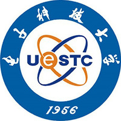 电子科技大学 | 985 | A+ |
| 2 |  西安电子科技大学 西安电子科技大学 | 211 | A+ |
| 3 |  北京大学 北京大学 | 985 | A |
| 4 | 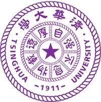 清华大学 | 985 | A |
| 5 |  东南大学 东南大学 | 985 | A |
| 6 |  北京邮电大学 北京邮电大学 | 211 | A- |
| 7 |  复旦大学 复旦大学 | 985 | A- |
| 8 |  上海交通大学 上海交通大学 | 985 | A- |
| 9 | 南京大学 | 985 | A- |
| 10 | 浙江大学 | 985 | A- |
| 11 | 西安交通大学 | 985 | A- |
| 12 | 北京航空航天大学 | 985 | B+ |
| 13 | 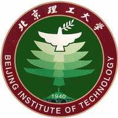 北京理工大学 | 985 | B+ |
| 14 |  天津大学 天津大学 | 985 | B+ |
| 15 | 吉林大学 | 985 | B+ |
| 16 | 南京邮电大学 | 双一流 | B+ |
| 17 | 杭州电子科技大学 | 双非 | B+ |
| 18 |  华中科技大学 华中科技大学 | 985 | B+ |
| 19 | 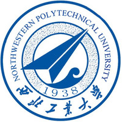 西北工业大学 | 985 | B+ |
| 20 | 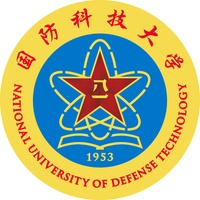 国防科技大学 | 985 | B+ |
| 21 | 空军工程大学 | 双非 | B+ |
| 22 |  北京工业大学 北京工业大学 | 211 | B |
| 23 |  南开大学 南开大学 | 985 | B |
| 24 | 哈尔滨工业大学 | 985 | B |
| 25 |  华东师范大学 华东师范大学 | 985 | B |
| 26 | 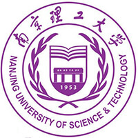 南京理工大学 | 211 | B |
| 27 | 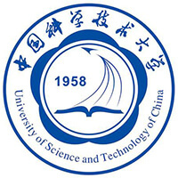 中国科学技术大学 | 985 | B |
| 28 | 厦门大学 | 985 | B |
| 29 | 武汉大学 | 985 | B |
| 30 |  中山大学 中山大学 | 985 | B |
| 31 | 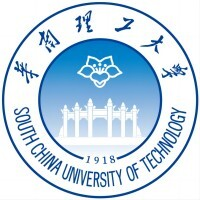 华南理工大学 | 985 | B |
| 32 | 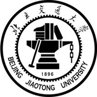 北京交通大学 | 211 | B- |
| 33 |  大连理工大学 大连理工大学 | 985 | B- |
| 34 | 安徽大学 | 211 | B- |
| 35 | 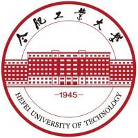 合肥工业大学 | 211 | B- |
| 36 |  福州大学 福州大学 | 211 | B- |
| 37 |  山东大学 山东大学 | 985 | B- |
| 38 | 湖南大学 | 985 | B- |
| 39 |  重庆大学 重庆大学 | 985 | B- |
| 40 |  西南交通大学 西南交通大学 | 211 | B- |
| 41 | 西安理工大学 | 双非 | B- |
| 42 | 解放军理工大学 | 双非 | B- |
| 43 |  中国传媒大学 中国传媒大学 | 211 | C+ |
| 44 | 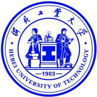 河北工业大学 | 211 | C+ |
| 45 |  太原理工大学 太原理工大学 | 211 | C+ |
| 46 | 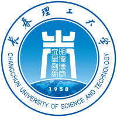 长春理工大学 | 双非 | C+ |
| 47 | 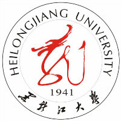 黑龙江大学 | 双非 | C+ |
| 48 |  燕山大学 燕山大学 | 双非 | C+ |
| 49 | 上海大学 | 211 | C+ |
| 50 |  中南大学 中南大学 | 985 | C+ |
| 51 |  重庆邮电大学 重庆邮电大学 | 双非 | C+ |
| 52 |  兰州大学 兰州大学 | 985 | C+ |
| 53 | 解放军信息工程大学 | 双非 | C+ |
| 54 |  天津工业大学 天津工业大学 | 双非 | C |
| 55 |  天津理工大学 天津理工大学 | 双非 | C |
| 56 |  南京航空航天大学 南京航空航天大学 | 211 | C |
| 57 | 湖北大学 | 双非 | C |
| 58 |  长沙理工大学 长沙理工大学 | 双非 | C |
| 59 | 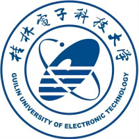 桂林电子科技大学 | 双非 | C |
| 60 | 四川大学 | 985 | C |
| 61 | 贵州大学 | 双非 | C |
| 62 | 西安邮电大学 | 双非 | C |
| 63 | 海军航空工程学院 | 双非 | C |
| 64 |  北方工业大学 北方工业大学 | 双非 | C- |
| 65 | 河北大学 | 双非 | C- |
| 66 |  华北电力大学 华北电力大学 | 211 | C- |
| 67 | 中北大学 | 双非 | C- |
| 68 |  哈尔滨工程大学 哈尔滨工程大学 | 211 | C- |
| 69 | 苏州大学 | 211 | C- |
| 70 |  中国计量大学 中国计量大学 | 双非 | C- |
| 71 | 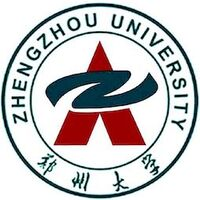 郑州大学 | 211 | C- |
| 72 |  武汉理工大学 武汉理工大学 | 211 | C- |
| 73 |  深圳大学 深圳大学 | 双非 | C- |
| 74 |  西北大学 西北大学 | 211 | C- |
第四轮学科评估上榜率：75 / 106
2025软科中国最好学科排名
| 序号 | 院校名称 | 层级 | 排名段 |
|---|---|---|---|
| 1 | 电子科技大学 | 985 | 前3% |
| 2 | 西安电子科技大学 | 211 | 前3% |
| 3 | 东南大学 | 985 | 前3% |
| 4 | 清华大学 | 985 | 前3% |
| 5 | 复旦大学 | 985 | 前3% |
| 6 | 北京大学 | 985 | 前7% |
| 7 | 北京航空航天大学 | 985 | 前7% |
| 8 | 西安交通大学 | 985 | 前7% |
| 9 | 南京大学 | 985 | 前12% |
| 10 | 吉林大学 | 985 | 前12% |
| 11 | 上海交通大学 | 985 | 前12% |
| 12 | 浙江大学 | 985 | 前12% |
| 13 | 北京理工大学 | 985 | 前12% |
| 14 | 华中科技大学 | 985 | 前12% |
| 15 | 北京邮电大学 | 211 | 前12% |
| 16 | 南京邮电大学 | 双一流 | 前20% |
| 17 | 杭州电子科技大学 | 双非 | 前20% |
| 18 | 南京理工大学 | 211 | 前20% |
| 19 | 厦门大学 | 985 | 前20% |
| 20 | 中山大学 | 985 | 前20% |
| 21 | 西北工业大学 | 985 | 前20% |
| 22 | 国防科技大学 | 985 | 前20% |
| 23 | 华南理工大学 | 985 | 前20% |
| 24 | 武汉大学 | 985 | 前20% |
| 25 | 哈尔滨工业大学 | 985 | 前20% |
| 26 | 中国科学技术大学 | 985 | 前30% |
| 27 | 南方科技大学 | 双一流 | 前30% |
| 28 | 湖南大学 | 985 | 前30% |
| 29 | 天津大学 | 985 | 前30% |
| 30 | 山东大学 | 985 | 前30% |
| 31 | 福州大学 | 211 | 前30% |
| 32 | 深圳大学 | 双非 | 前30% |
| 33 | 上海大学 | 211 | 前30% |
| 34 | 安徽大学 | 211 | 前30% |
| 34 | 南京航空航天大学 | 211 | 前30% |
| 36 | 南开大学 | 985 | 前30% |
| 37 |  东北大学 东北大学 | 985 | 前30% |
| 38 | 北京工业大学 | 211 | 前30% |
| 39 | 西南交通大学 | 211 | 前40% |
| 40 | 中北大学 | 双非 | 前40% |
| 41 | 华东师范大学 | 985 | 前40% |
| 42 |  宁波大学 宁波大学 | 双一流 | 前40% |
| 43 | 北京交通大学 | 211 | 前40% |
| 43 | 中南大学 | 985 | 前40% |
| 45 | 合肥工业大学 | 211 | 前40% |
| 46 | 西安邮电大学 | 双非 | 前40% |
| 47 | 长春理工大学 | 双非 | 前40% |
| 48 |  广东工业大学 广东工业大学 | 双非 | 前40% |
| 49 |  南京信息工程大学 南京信息工程大学 | 双一流 | 前40% |
| 50 | 哈尔滨工程大学 | 211 | 前40% |
| 51 | 桂林电子科技大学 | 双非 | 前50% |
| 52 | 河北工业大学 | 211 | 前50% |
| 52 | 西安理工大学 | 双非 | 前50% |
| 54 | 天津工业大学 | 双非 | 前50% |
| 54 | 郑州大学 | 211 | 前50% |
| 56 | 四川大学 | 985 | 前50% |
| 57 |  华南师范大学 华南师范大学 | 211 | 前50% |
| 58 | 重庆邮电大学 | 双非 | 前50% |
| 58 | 青岛大学 | 双非 | 前50% |
| 60 |  湖南师范大学 湖南师范大学 | 211 | 前50% |
数据来源：2025软科中国最好学科排名（电子科学与技术），共 60 所学校上榜
院校数据（基于26考研数据）
覆盖 71 所高校，进复试 2343 人，录取 1888 人。
| 院校名称 | 录取 | 数学 | 英语 | 专业课 | 总分 | 专业课 | 学院 |
|---|---|---|---|---|---|---|---|
| 北京邮电大学 | 291 | 数一 | 英一 | 通信原理 | 342.3 | 107.0 | (002)电子工程学院 |
| 西安电子科技大学 | 167 | 数一 | 英一 | 半导体物理/电磁场与微波技术/电路、信号与系统 | 348.9 | 119.3 | (002)电子工程学院/(025)集成电路学部 |
| 电子科技大学 | 147 | 数一 | 英一 | 信号与系统/电磁场与电磁波 | 389.0 | 122.9 | (002)电子科学与工程学院 |
| 杭州电子科技大学 | 98 | 数一 | 英一 | 信号与系统分析 | 320.1 | 93.7 | (020)电子信息学院/(021)电子信息中外合作教育中心 |
| 南京邮电大学 | 81 | 数一 | 英一 | 半导体物理/电路分析 | 317.7 | 93.1 | (002)电子与光学工程学院/柔性电子（未来技术）学院/(003)集成电路科学与工程学院（产教融合学院） |
| 安徽大学 | 66 | 数一 | 英一 | 专业基础综合一（信号与系统、数字电路与/半导体物理 | 321.3 | 102.0 | (021)电子信息工程学院/(027)集成电路学院 |
| 湖南大学 | 64 | 数一 | 英一 | 数字与模拟电子技术/电子技术基础 | 363.4 | 112.7 | (007)物理与微电子科学学院/(009)电气与信息工程学院/(035)半导体学院（集成电路学院） |
| 重庆邮电大学 | 64 | 数一 | 英一 | 数字电路与逻辑设计 | 319.0 | 80.5 | (005)电子科学与工程学院 |
| 西安邮电大学 | 59 | 数一 | 英一 | 电子技术基础 | 350.0 | 100.4 | (002)电子工程学院、集成电路学院 |
| 北京工业大学 | 51 | 数一 | 英一 | 信号与系统/半导体物理 | 334.6 | 100.6 | (087)信息科学技术学院 |
| 贵州大学 | 44 | 数一 | 英一 | 电子技术基础 | 299.5 | 85.3 | (117)大数据与信息工程学院/(136)医学院 |
| 河北工业大学 | 41 | 数一 | 英一 | 半导体物理学/模拟与数字电路 | 315.1 | 94.5 | (019)电子信息工程学院 |
| 吉林大学 | 34 | 数一 | 英一 | 模拟与数字电路 | 394.0 | 121.7 | (501)电子科学与工程学院 |
| 宁波大学 | 32 | 数一 | 英一 | 信号与系统 | 323.5 | 90.8 | (010)信息科学与工程学院 |
| 华南师范大学 | 31 | 数一 | 英一 | 信号与系统 | 346.0 | - | (048)电子科学与工程学院（微电子学院） |
| 华南理工大学 | 30 | 数一 | 英一 | 信号与系统 | 375.4 | 115.7 | (104)电子与信息学院/(303)微电子学院 |
| 东南大学 | 28 | 数一 | 英一 | 专业基础综合(信号与系统、数字电路)/半导体物理/电磁场与电磁波 | 368.2 | 121.6 | (004)信息科学与工程学院/(006)电子科学与工程学院 |
| 广东工业大学 | 25 | 数一 | 英一 | 电子技术基础 | 320.6 | - | (015)物理与光电工程学院/(025)集成电路学院 |
| 常州大学 | 25 | 数一 | 英一 | 电路分析 | 325.0 | 81.7 | (007)王诤微电子学院 |
| 南京航空航天大学 | 24 | 数二 | 英一 | 数字电路和信号与系统 | 360.0 | 115.8 | (004)电子信息工程学院 |
| 西安理工大学 | 24 | 数一 | 英一 | 模拟电子技术基础 | 319.5 | 86.6 | (103)自动化与信息工程学院 |
| 北京理工大学 | 23 | 数一 | 英一 | 电子科学与技术基础 | 354.0 | 109.2 | (213)集成电路与电子学院 |
| 华东师范大学 | 22 | 数一 | 英一 | 半导体基础 | 330.0 | 102.4 | (167)物理与电子科学学院电子科学系 |
| 华中科技大学 | 22 | 数一 | 英一 | 信号与线性系统/电子技术基础 | 360.2 | 119.9 | (181)电子信息与通信学院/(190)集成电路学院 |
| 南京理工大学 | 21 | 数一 | 英一 | 固体物理/电磁场与电磁波/电磁波、信号与系统 | 346.2 | 92.3 | (104)电子工程与光电技术学院/(132)微电子学院（集成电路学院） |
| 北京航空航天大学 | 19 | 数一 | 英一 | 通信类专业综合 | 352.0 | 112.6 | (002)电子信息工程学院 |
| 深圳大学 | 18 | 数一 | 英一 | 电子电路 | 306.0 | 97.6 | (104)电子与信息工程学院 |
| 湖南师范大学 | 17 | 数一 | 英一 | 数字电子技术 | 332.8 | 90.1 | (011)物理与电子科学学院/(018)工程与设计学院/(029)信息科学与工程学院 |
| 上海交通大学 | 16 | 数一 | 英一 | 信号系统与信号处理/半导体物理与器件基础 | 351.3 | 127.9 | (034)集成电路学院 |
| 厦门大学 | 16 | 数一 | 英一 | 信号与系统/半导体物理与器件/普通物理学（含热、力、光、电）/电子电路 | 345.3 | 112.8 | (084)电子科学系/(085)电磁声学研究院/(132)电子工程系/(320)微电子与集成电路系 |
| 合肥工业大学 | 16 | 数一 | 英一 | 电子科学与技术综合 | 352.0 | 118.0 | (010)微电子学院 |
 华中师范大学 华中师范大学 | 15 | 数一 | 英一 | 信号与系统 | 332.0 | 101.6 | (012)物理科学与技术学院 |
| 天津工业大学 | 14 | 数一 | 英一 | 信号与系统 | 304.0 | 94.0 | (008)电子与信息工程学院 |
| 国防科技大学 | 13 | 数一 | 英一 | 信号与系统/电磁学 | 364.1 | 119.5 | (003)电子科学学院/(004)前沿交叉学科学院 |
| 长沙理工大学 | 13 | 数一 | 英一 | 电路基础 | 312.0 | 101.5 | (011)物理与电子科学学院 |
| 太原理工大学 | 13 | 数一 | 英一 | 模拟与数字电子技术 | 326.0 | 94.7 | (037)集成电路学院 |
| 南京林业大学 | 12 | 数一 | 英一 | 电路A | 320.7 | 95.5 | (008)信息科学技术学院、人工智能学院 |
| 燕山大学 | 11 | 数一 | 英一 | 电路原理、模拟电子技术 | 315.0 | 82.5 | (004)信息科学与工程学院 |
| 武汉大学 | 11 | 数一 | 英一 | 信号与系统/半导体物理 | 379.3 | 116.5 | (202)物理科学与技术学院/(212)电子信息学院/(227)集成电路学院 |
| 南开大学 | 10 | 数一 | 英一 | 电磁学 | 378.0 | 121.0 | (031)电子信息与光学工程学院 |
| 东北大学 | 10 | 数一 | 英一 | 数字电子技术 | 353.5 | 112.9 | (005)信息科学与工程学院 |
| 华北电力大学 | 9 | 数一 | 英一 | 电子技术基础 | 334.5 | 94.2 | (001)电气与电子工程学院 |
| 西安交通大学 | 9 | 数一 | 英一 | 信号与系统（含数字信号处理） | - | 110.9 | (052)电子与信息学部-信息与通信工程学院 |
| 南方科技大学 | 9 | 数一 | 英一 | 电子科学与技术综合 | 337.0 | 106.2 | (005)电子与电气工程系 |
 江南大学 江南大学 | 9 | 数一 | 英一 | 模拟与数字电子技术 | 353.0 | 108.3 | (038)集成电路学院 |
 湘潭大学 湘潭大学 | 9 | 数一 | 英一 | 模拟电子技术 | 325.0 | 121.0 | (010)物理与光电工程学院 |
| 中南大学 | 8 | 数一 | 英一 | 信号与系统 | 400.0 | 125.0 | (045)电子信息学院 |
| 中国传媒大学 | 7 | 数一 | 英一 | 信号与系统 | 328.0 | 88.9 | (211)信息与通信工程学院 |
| 北京交通大学 | 7 | 数一 | 英一 | 通信原理 | 309.0 | 96.6 | (001)电子信息工程学院 |
| 桂林电子科技大学 | 7 | 数一 | 英一 | 电路、信号与系统 | 280.5 | 83.6 | (002)信息与通信学院 |
| 哈尔滨工程大学 | 7 | 数一 | 英一 | 电路、信号与系统 | 309.5 | 87.7 | (008)信息与通信工程学院 |
 暨南大学 暨南大学 | 6 | 数一 | 英一 | 电子技术基础 | 326.0 | 104.0 | (010)信息科学技术学院/(040)能源电力研究中心 |
| 中国科学技术大学 | 6 | 数一 | 英一 | 半导体物理/电子学基础/电路与电子线路 | 347.8 | 107.3 | (203)物理学院/(219)微电子学院 |
| 南京信息工程大学 | 6 | 数一 | 英一 | 信号与系统 | 316.0 | 87.8 | (010)电子与信息工程学院 |
.jpg) 华北电力大学(保定) 华北电力大学(保定) | 6 | 数一 | 英一 | 信号与系统 | 317.5 | 89.5 | (008)电子与通信工程系 |
 北京化工大学 北京化工大学 | 6 | 数一 | 英一 | 电磁场与电磁波 | 294.0 | 95.0 | (011)数理学院 |
| 长春理工大学 | 4 | 数一 | 英一 | 信号与系统 | 305.0 | 80.0 | (004)电子信息工程学院 |
 中国科学院大学 中国科学院大学 | 4 | 数一 | 英一 | 信号与系统/半导体物理 | 308.2 | 87.5 | (139)长春光学精密机械与物理研究所 |
| 西北大学 | 4 | 数一 | 英一 | 电子类专业基础综合 | 292.5 | - | (041)电子信息学院 |
| 武汉理工大学 | 4 | 数一 | 英一 | 信号与系统 | 304.0 | 94.5 | (009)信息工程学院 |
| 西南交通大学 | 4 | 数一 | 英一 | 电子技术基础 | 316.5 | 83.0 | (004)信息科学与技术学院 |
| 中北大学 | 3 | 数一 | 英一 | 半导体物理与器件 | 288.0 | 65.3 | (019)半导体与物理学院 |
| 安徽建筑大学 | 3 | 数一 | 英一 | 模拟电子技术 | 282.0 | 80.7 | (005)电子与信息工程学院 |
| 南京大学 | 3 | 数一 | 英一 | 信号与系统 | 393.5 | 123.3 | (023)电子科学与工程学院 |
 安徽师范大学 安徽师范大学 | 2 | 数一 | 英一 | 数字电子技术基础 | 311.5 | 108.0 | (010)物理与电子信息学院 |
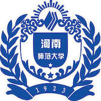 河南师范大学 | 2 | 数一 | 英一 | 电路基础 | 356.0 | 115.0 | (022)电子与电气工程学院 |
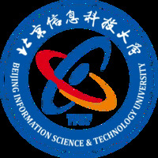 北京信息科技大学 | 2 | 数一 | 英一 | 半导体物理 | 309.5 | 64.5 | (010)理学院 |
| 中山大学 | 2 | 数二 | 英二 | 固体物理A | 329.0 | 93.5 | (762)电子与信息工程学院 |
| 天津理工大学 | 1 | 数一 | 英一 | 半导体物理 | 296.0 | 69.0 | (017)集成电路科学与工程学院 |
| 北方工业大学 | 1 | 数一 | 英一 | 信号与系统 | 305.0 | 111.0 | (003)人工智能与计算机学院 |
| 浙江大学 | 0 | 数一 | 英一 | 信号系统与数字电路 | 395.0 | 136.6 | (310)信息与电子工程学院 |
典型院校考试科目组合：
| 院校 | 考试科目 |
|---|---|
| 清华大学 | 英一数一 + (829)电磁场与电磁波 |
| 电子科大 | 英一数一 + (813)电路分析基础 |
| 西安电子科技大学 | 英一数一 + (821)电路、信号与系统 |
就业去向分析
🔧 硬件工程师
电路原理图设计、PCB Layout、硬件调试与测试，是电子产品从无到有的关键执行者。
💻 嵌入式硬件工程师
以MCU/MPU/SoC为核心的嵌入式系统硬件平台设计，熟悉ARM、RISC-V等架构。
🔌 FPGA工程师
使用Verilog/VHDL进行数字电路设计、仿真、综合与验证，应用于通信、图像处理、高性能计算。
🧠 模拟/数字IC设计工程师
电源管理、信号链、射频等模拟电路模块设计，或数字逻辑模块/SoC的RTL编写与验证。
🔍 测试工程师（ATE/硬件测试）
制定测试方案，使用专业仪器对芯片、电路板或整机进行功能、性能和可靠性测试。
🚀 系统架构师/技术专家
负责整个产品或技术路线的顶层规划与难题攻关，是技术发展的核心推动力。
| 院校层次 | 就业去向 | 薪资区间 |
|---|---|---|
| 顶尖院校(C9) | 华为海思、中芯国际、头部企业核心研发岗 | 25-40万/年 |
| 985/211院校 | 知名芯片/电子企业研发岗位、科研院所 | 18-28万/年 |
| 普通院校 | 中小企业硬件/测试岗位、生产线技术岗 | 12-20万/年 |
信息与通信工程
掌握信息时代核心技术，连接未来通信世界
专业定位与特色
信息与通信工程是研究信息获取、传输、处理和应用的核心学科，是5G通信、物联网、人工智能等前沿技术的基础。该专业聚焦于通信系统和信息网络，培养通信领域的高级工程技术人才。
与电子科学与技术相比，更偏重于信息传输和信号处理；与计算机科学相比，更注重通信网络和数据传输。该专业毕业生就业面广，薪资水平高。
具体研究方向
🔥 通识方向
1. 新一代移动通信技术
移动通信（4G/5G/6G）、宽带无线通信、6G网络及智能信息处理
技术演进：太赫兹通信、智能超表面RIS、O-RAN开放网络架构
产业应用：华为/中兴基站设备、高通/联发科手机芯片
2. 光通信与量子通信
光通信系统与网络、光电子器件及集成芯片、高速光信号传输、量子精密测量
前沿突破：空分复用光纤（单纤容量1Pb/s+）、量子密钥分发（QKD）城域组网
代表机构：烽火通信、长飞光纤、国盾量子
3. 智能信号与信息处理
智能通信与信号处理、信号处理与智能计算、智能信号处理与目标识别
AI融合：通信信号盲分离（深度学习）、无线信道AI建模
典型应用：雷达抗干扰（中国电科）、语音增强（科大讯飞）
4. 空天地一体化通信
卫星与空间通信、深空探测通信、天临空地海一体化网络、北斗综合智能导航
特殊场景：月球中继通信（鹊桥系列卫星）、高通量卫星（HTS）技术
国防应用：战略支援部队、航天科技集团
5. 网络与信息安全
网络攻防与网络安全、密码算法与分析、隐私计算、电磁空间安全
安全体系：后量子密码（抗量子计算攻击）、零信任安全架构
行业需求：金融级加密（数字货币）、工业防火墙（奇安信）
6. 多媒体与虚拟现实
人机交互与VR、沉浸式媒体技术、新型显示系统、元宇宙建模与交互
技术融合：神经渲染（NeRF）、触觉反馈（Haptics）
产业应用：虚拟制片（迪士尼）、数字孪生（宝马工厂）
7. 物联网与边缘计算
物联网技术、无线传感器网络、智能感知与物联网、工业互联网通信
新兴方向：无源物联网（Ambient IoT）、时间敏感网络（TSN）
落地场景：智能电网（华为数字能源）、工业物联网（西门子）
8. 雷达与智能感知
雷达探测与成像、雷达信号处理、新体制雷达系统、智能光电感知
军民融合：合成孔径雷达（SAR）、激光LiDAR点云处理
装备研发：无人机载雷达、智能驾驶感知系统
9. 生物医学信息工程
医学图像处理、生物医学信息处理、医工结合与医学影像、AI医学影像辅助诊断
交叉创新：术中MRI导航、脑机接口信号解码
医疗应用：联影医疗、西门子医疗设备
学科评估
| 序号 | 院校名称 | 层级 | 第五轮 | 第四轮 |
|---|---|---|---|---|
| 1 | 北京邮电大学 | 211 | A+ | A+ |
| 2 | 电子科技大学 | 985 | A+ | A+ |
| 3 | 西安电子科技大学 | 211 | A+ | A |
| 4 | 国防科技大学 | 985 | A+ | A |
| 5 | 北京理工大学 | 985 | A+ | A- |
| 6 | 清华大学 | 985 | A | A |
| 7 | 上海交通大学 | 985 | A | A |
| 8 | 北京交通大学 | 211 | A | A- |
| 9 | 北京航空航天大学 | 985 | A | A- |
| 10 | 东南大学 | 985 | A | A- |
| 11 | 中国人民解放军战略支援部队信息工程大学 | 双非 | A | A- |
| 12 | 中国人民解放军陆军工程大学 | 双非 | A | A- |
| 13 | 哈尔滨工业大学 | 985 | A- | A- |
| 14 | 北京大学 | 985 | A- | B+ |
| 15 | 南京邮电大学 | 双一流 | A- | B+ |
| 16 | 浙江大学 | 985 | A- | B+ |
| 17 | 中国科学技术大学 | 985 | A- | B+ |
| 18 | 南京航空航天大学 | 211 | A- | B |
| 19 | 西北工业大学 | 985 | A- | B |
| 20 | 天津大学 | 985 | B+ | B+ |
| 21 | 大连理工大学 | 985 | B+ | B+ |
| 22 | 哈尔滨工程大学 | 211 | B+ | B+ |
| 23 | 华中科技大学 | 985 | B+ | B+ |
| 24 | 华南理工大学 | 985 | B+ | B+ |
| 25 | 西南交通大学 | 211 | B+ | B+ |
| 26 | 重庆邮电大学 | 双非 | B+ | B+ |
| 27 | 西安交通大学 | 985 | B+ | B+ |
| 28 | 中国人民解放军海军航空大学 | 双非 | B+ | B+ |
| 29 | 中国人民解放军空军工程大学 | 双非 | B+ | B+ |
| 30 | 吉林大学 | 985 | B+ | B- |
| 31 | 西安邮电大学 | 双非 | B+ | B- |
| 32 | 南京信息工程大学 | 双一流 | B+ | C+ |
| 33 | 中国传媒大学 | 211 | B | B |
| 34 | 中北大学 | 双非 | B | B |
| 35 | 东北大学 | 985 | B | B |
| 36 | 上海大学 | 211 | B | B |
| 37 | 南京大学 | 985 | B | B |
| 38 | 南京理工大学 | 211 | B | B |
| 39 | 厦门大学 | 985 | B | B |
| 40 | 山东大学 | 985 | B | B |
| 41 | 武汉大学 | 985 | B | B |
| 42 | 武汉理工大学 | 211 | B | B |
| 43 | 深圳大学 | 双非 | B | B |
| 44 | 四川大学 | 985 | B | B |
| 45 |  大连海事大学 大连海事大学 | 211 | B- | B- |
| 46 | 苏州大学 | 211 | B- | B- |
| 47 |  中国矿业大学 中国矿业大学 | 211 | B- | B- |
| 48 | 河海大学 | 211 | B- | B- |
| 49 | 合肥工业大学 | 211 | B- | B- |
| 50 | 中山大学 | 985 | B- | B- |
| 51 | 桂林电子科技大学 | 双非 | B- | B- |
| 52 | 重庆大学 | 985 | B- | B- |
| 53 | 宁波大学 | 双一流 | B- | B- |
| 54 | 中国人民解放军战略支援部队航天工程大学 | 双非 | B- | B- |
| 55 | 中国人民解放军海军工程大学 | 双非 | B- | B- |
| 56 | 郑州大学 | 211 | B- | C+ |
| 57 | 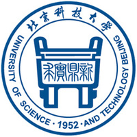 北京科技大学 | 211 | / | C+ |
| 58 | 福州大学 | 211 | C+ | C+ |
| 59 | 湖南大学 | 985 | C+ | C+ |
| 60 |  海南大学 海南大学 | 211 | C+ | C+ |
| 61 | 成都信息工程大学 | 双非 | C+ | C+ |
| 62 |  云南大学 云南大学 | 211 | C+ | C+ |
| 63 | 北京工业大学 | 211 | C+ | C+ |
| 64 | 华北电力大学 | 211 | C+ | C+ |
| 65 | 长春理工大学 | 双非 | C+ | C+ |
| 66 |  同济大学 同济大学 | 985 | C+ | C+ |
| 67 | 华东师范大学 | 985 | C+ | C+ |
| 68 | 南通大学 | 双非 | C+ | C+ |
| 69 | 南开大学 | 985 | C | C |
| 70 | 天津工业大学 | 双非 | C | C |
| 71 | 中国民航大学 | 双非 | C | C |
| 72 | 黑龙江大学 | 双非 | C | C |
| 73 | 复旦大学 | 985 | C | C |
| 74 |  上海海事大学 上海海事大学 | 双非 | C | C |
| 75 | 杭州电子科技大学 | 双非 | C | C |
| 76 |  浙江工业大学 浙江工业大学 | 双非 | C | C |
| 77 | 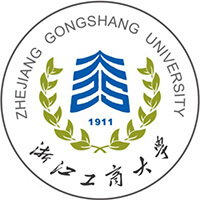 浙江工商大学 | 双非 | C | C |
| 78 | 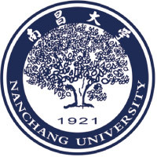 南昌大学 | 211 | C | C |
| 79 | 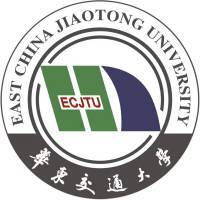 华东交通大学 | 双非 | C | C |
| 80 | 中国海洋大学 | 985 | C | C |
| 81 | 中南大学 | 985 | C | C |
| 82 | 暨南大学 | 211 | C | C |
| 83 | 天津理工大学 | 双非 | C- | C- |
| 84 |  沈阳航空航天大学 沈阳航空航天大学 | 双非 | C- | C- |
| 85 | 燕山大学 | 双非 | C- | C- |
| 86 |  东华大学 东华大学 | 211 | C- | C- |
| 87 |  山东科技大学 山东科技大学 | 双非 | C- | C- |
| 88 | 中国地质大学 | 211 | C- | C- |
| 89 | 西北大学 | 211 | C- | C- |
| 90 | 西安理工大学 | 双非 | C- | C- |
| 91 | 西安科技大学 | 双非 | C- | C- |
| 92 | 兰州大学 | 985 | C- | C- |
| 93 | 兰州交通大学 | 双非 | C- | C- |
| 94 | 广东工业大学 | 双非 | C- | C- |
| 95 | 火箭军工程大学 | 双非 | C- | C- |
| 96 | 北方工业大学 | 双非 | C- | / |
第四轮学科评估上榜率：95 / 137
2025软科中国最好学科排名
| 序号 | 院校名称 | 层级 | 排名段 |
|---|---|---|---|
| 1 | 西安电子科技大学 | 211 | 前3% |
| 2 | 电子科技大学 | 985 | 前3% |
| 3 | 北京邮电大学 | 211 | 前3% |
| 4 | 北京理工大学 | 985 | 前3% |
| 5 | 东南大学 | 985 | 前3% |
| 6 | 清华大学 | 985 | 前7% |
| 7 | 上海交通大学 | 985 | 前7% |
| 8 | 北京航空航天大学 | 985 | 前7% |
| 9 | 北京交通大学 | 211 | 前7% |
| 10 | 中国人民解放军国防科技大学 | 985 | 前7% |
| 11 | 哈尔滨工业大学 | 985 | 前7% |
| 12 | 南京邮电大学 | 双一流 | 前7% |
| 13 | 南京航空航天大学 | 211 | 前7% |
| 14 | 华中科技大学 | 985 | 前12% |
| 15 | 中国科学技术大学 | 985 | 前12% |
| 16 | 浙江大学 | 985 | 前12% |
| 17 | 深圳大学 | 双非 | 前12% |
| 18 | 华南理工大学 | 985 | 前12% |
| 19 | 西北工业大学 | 985 | 前12% |
| 20 | 重庆邮电大学 | 双非 | 前12% |
| 21 | 西南交通大学 | 211 | 前12% |
| 22 | 北京大学 | 985 | 前12% |
| 23 | 上海大学 | 211 | 前12% |
| 24 | 武汉理工大学 | 211 | 前20% |
| 25 | 西安交通大学 | 985 | 前20% |
| 26 | 哈尔滨工程大学 | 211 | 前20% |
| 27 | 中山大学 | 985 | 前20% |
| 28 | 武汉大学 | 985 | 前20% |
| 29 | 南京理工大学 | 211 | 前20% |
| 30 | 广东工业大学 | 双非 | 前20% |
| 31 | 中国传媒大学 | 211 | 前20% |
| 32 | 重庆大学 | 985 | 前20% |
| 33 | 宁波大学 | 双一流 | 前20% |
| 34 | 中国人民解放军陆军工程大学 | 双非 | 前20% |
| 35 | 大连理工大学 | 985 | 前20% |
| 36 | 桂林电子科技大学 | 双非 | 前20% |
| 37 | 吉林大学 | 985 | 前20% |
| 38 | 西安邮电大学 | 双非 | 前20% |
| 39 | 南京信息工程大学 | 双一流 | 前20% |
| 40 | 复旦大学 | 985 | 前30% |
| 41 | 天津大学 | 985 | 前30% |
| 42 | 山东大学 | 985 | 前30% |
| 43 | 厦门大学 | 985 | 前30% |
| 44 | 福州大学 | 211 | 前30% |
| 45 | 安徽大学 | 211 | 前30% |
| 46 | 南京大学 | 985 | 前30% |
| 47 | 杭州电子科技大学 | 双非 | 前30% |
| 48 | 合肥工业大学 | 211 | 前30% |
| 48 | 中国人民解放军网络空间部队信息工程大学 | 双非 | 前30% |
| 50 | 北京科技大学 | 211 | 前30% |
| 51 | 西北大学 | 211 | 前30% |
| 52 | 大连海事大学 | 211 | 前30% |
| 53 | 湖南大学 | 985 | 前30% |
| 53 | 南通大学 | 双非 | 前30% |
| 55 | 东北大学 | 985 | 前30% |
| 56 | 河海大学 | 211 | 前30% |
| 57 | 同济大学 | 985 | 前30% |
| 58 | 北京工业大学 | 211 | 前30% |
| 58 | 四川大学 | 985 | 前30% |
| 58 | 苏州大学 | 211 | 前30% |
数据来源：2025软科中国最好学科排名（信息与通信工程），共 99 所学校上榜
院校数据（基于26考研数据）
覆盖 126 所高校，进复试 4162 人，录取 3190 人。
| 院校名称 | 录取 | 数学 | 英语 | 专业课 | 总分 | 专业课 | 学院 |
|---|---|---|---|---|---|---|---|
| 西安电子科技大学 | 230 | 数一 | 英一 | 信号与系统、电路/电路、信号与系统 | 368.9 | 124.6 | (001)通信工程学院/(002)电子工程学院 |
| 重庆邮电大学 | 218 | 数一 | 英一 | 信号与系统 | 315.0 | 95.3 | (001)通信与信息工程学院 |
| 北京邮电大学 | 170 | 数一 | 英一 | 通信原理 | 365.4 | 119.9 | (001)信息与通信工程学院/(005)人工智能学院 |
| 南京邮电大学 | 112 | 数一 | 英一 | 通信原理 | 341.0 | 106.5 | (001)通信与信息工程学院 |
| 西安邮电大学 | 100 | 数一 | 英一 | 信号与系统 | 315.0 | 96.9 | (001)通信与信息工程学院 |
| 电子科技大学 | 94 | 数一 | 英一 | 信号与系统 | 388.6 | 127.7 | (001)信息与通信工程学院/(022)通信抗干扰全国重点实验室 |
| 中国传媒大学 | 92 | 数一 | 英一 | 信号与系统 | 333.0 | 98.2 | (211)信息与通信工程学院 |
| 杭州电子科技大学 | 66 | 数一 | 英一 | 信号与系统 | 330.0 | 96.4 | (030)通信工程学院 |
| 北京交通大学 | 61 | 数一 | 英一 | 通信原理 | 349.0 | 114.7 | (001)电子信息工程学院 |
| 北京理工大学 | 55 | 数一 | 英一 | 信号处理导论 | 353.3 | 105.5 | (205)信息与电子学院/(280)珠海校区 |
| 安徽大学 | 52 | 数一 | 英一 | 专业基础综合一（信号与系统、数字电路与 | 322.0 | 102.5 | (021)电子信息工程学院 |
| 哈尔滨工程大学 | 52 | 数一 | 英一 | 信号与系统/电路、信号与系统 | 336.7 | 101.4 | (005)水声工程学院/(008)信息与通信工程学院 |
| 大连海事大学 | 52 | 数一 | 英一 | 电路理论（75分）、信号与系统（75分） | 327.0 | 97.6 | (004)信息科学技术学院 |
| 长春理工大学 | 48 | 数一 | 英一 | 信号与系统 | 309.0 | 82.9 | (004)电子信息工程学院 |
| 南京理工大学 | 48 | 数一 | 英一 | 信号、系统与数字电路 | 372.0 | 116.0 | (104)电子工程与光电技术学院 |
| 武汉理工大学 | 47 | 数一 | 英一 | 信号与系统 | 382.0 | 121.8 | (009)信息工程学院 |
| 西南大学 | 45 | 数一 | 英一 | 信号与系统 | 313.0 | 100.4 | (333)电子信息工程学院 |
| 郑州大学 | 44 | 数一 | 英一 | 信息与通信工程基础 | 339.0 | 112.2 | (033)网络空间安全学院/(085)电气与信息工程学院 |
| 南京信息工程大学 | 43 | 数一 | 英一 | 信号与系统 | 344.3 | 103.6 | (010)电子与信息工程学院/(036)南信大浦口经开区创新港研究生培养基地 |
| 南通大学 | 42 | 数一 | 英一 | 数字系统原理与设计 | 310.7 | 84.9 | (630)信息科学技术学院/(633)交通与土木工程学院/(642)人工智能与计算机学院 |
| 广东工业大学 | 42 | 数二 | 英二 | 信号与系统 | 325.0 | - | (003)信息工程学院 |
| 西南交通大学 | 41 | 数一 | 英一 | 信号与系统 | 372.0 | 111.9 | (004)信息科学与技术学院 |
| 重庆大学 | 40 | 数一 | 英一 | 信号与系统 | 342.0 | - | (012)微电子与通信工程学院 |
| 宁波大学 | 36 | 数一 | 英一 | 信号与系统 | 345.5 | 98.9 | (010)信息科学与工程学院 |
| 河北工业大学 | 36 | 数一 | 英一 | 通信原理 | 327.0 | 98.2 | (019)电子信息工程学院 |
| 北京航空航天大学 | 35 | 数一 | 英一 | 通信类专业综合 | 362.0 | 116.9 | (002)电子信息工程学院 |
| 中国矿业大学 | 35 | 数一 | 英一 | 专业基础综合（信号与系统，通信原理） | 307.0 | 101.7 | (006)信息与控制工程学院 |
| 贵州大学 | 34 | 数一 | 英一 | 信号与系统 | 336.0 | 93.4 | (117)大数据与信息工程学院 |
| 中山大学 | 34 | 数二 | 英二 | 信号与系统 | 361.8 | 117.8 | (762)电子与信息工程学院/(765)电子与通信工程学院/(771)系统科学与工程学院 |
| 山西大学 | 34 | 数一 | 英一 | 信号与系统 | 312.0 | 79.6 | (015)物理电子工程学院 |
| 东华大学 | 32 | 数一 | 英一 | 信号与系统 | - | - | (023)信息与智能科学学院 |
| 吉林大学 | 31 | 数一 | 英一 | 电路与数字信号处理 | 375.0 | 113.1 | (502)通信工程学院 |
| 福州大学 | 30 | 数一 | 英一 | 信号与系统 | 334.5 | - | (011)物理与信息工程学院 |
| 华北电力大学(保定) | 30 | 数一 | 英一 | 电子技术基础 | 318.0 | 96.9 | (008)电子与通信工程系 |
| 浙江工业大学 | 30 | 数一 | 英一 | 通信原理与信号处理 | 318.0 | 90.1 | (003)信息工程学院 |
| 广西大学 | 29 | 数一 | 英一 | 数字电路及信号与系统 | 319.0 | 97.2 | (013)计算机与电子信息学院 |
| 东南大学 | 29 | 数一 | 英一 | 专业基础综合(信号与系统、数字电路) | 383.6 | 126.6 | (004)信息科学与工程学院 |
| 南昌大学 | 29 | 数一 | 英一 | 信号与系统 | 358.0 | 114.3 | (010)信息工程学院 |
| 西安理工大学 | 29 | 数一 | 英一 | 信号与系统（二）/数字图像处理 | 294.6 | 87.3 | (103)自动化与信息工程学院/(108)印刷包装与数字媒体学院 |
| 成都信息工程大学 | 27 | 数一 | 英一 | 信号与系统 | 303.3 | 76.0 | (003)电子工程学院/(004)通信工程学院 |
| 西安交通大学 | 25 | 数一 | 英一 | 信号与系统（含数字信号处理） | - | 124.5 | (052)电子与信息学部-信息与通信工程学院 |
| 北京工业大学 | 25 | 数一 | 英一 | 信号与系统 | 346.5 | 106.9 | (087)信息科学技术学院 |
| 南京航空航天大学 | 24 | 数一 | 英一 | 信号系统与数字信号处理 | 384.5 | 126.7 | (004)电子信息工程学院 |
| 桂林电子科技大学 | 24 | 数一 | 英一 | 电路、信号与系统 | 303.0 | 86.5 | (002)信息与通信学院 |
| 河海大学 | 23 | 数一 | 英一 | 信号与系统 | 340.6 | 109.5 | (042)信息科学与工程学院 |
| 成都理工大学 | 23 | 数一 | 英一 | 信号与系统 | 304.5 | 95.7 | (018)机电工程学院 |
| 中北大学 | 21 | 数一 | 英一 | 信号与系统 | 335.5 | 90.4 | (005)信息与通信工程学院 |
| 湖南大学 | 21 | 数一 | 英一 | 信号与系统 | 389.0 | 127.0 | (010)信息科学与工程学院 |
| 新疆大学 | 21 | 数一 | 英一 | 信号与系统 | 302.0 | 80.5 | (302)计算机科学与技术学院 |
| 华南理工大学 | 20 | 数一 | 英一 | 信号与系统 | 396.0 | 125.4 | (104)电子与信息学院 |
| 合肥工业大学 | 20 | 数一 | 英一 | 信号分析与处理综合 | 367.0 | 111.7 | (005)计算机与信息学院 |
| 哈尔滨理工大学 | 19 | 数一 | 英一 | 信号与系统 | 318.0 | 79.4 | (006)测控技术与通信工程学院 |
| 深圳大学 | 19 | 数一 | 英一 | 电子信息与通信系统综合 | 314.0 | 103.1 | (104)电子与信息工程学院 |
| 华北电力大学 | 18 | 数一 | 英一 | 信号与系统 | 324.0 | 102.1 | (001)电气与电子工程学院 |
| 华中科技大学 | 17 | 数一 | 英一 | 信号与线性系统 | 369.0 | 130.5 | (181)电子信息与通信学院 |
| 上海理工大学 | 17 | 数一 | 英一 | 信号与系统 | - | - | (002)光电信息与计算机工程学院 |
| 暨南大学 | 17 | 数一 | 英一 | 电子技术基础 | 323.7 | 93.2 | (010)信息科学技术学院 |
| 华中师范大学 | 17 | 数一 | 英一 | 信号与系统 | 341.5 | 106.2 | (012)物理科学与技术学院 |
| 湘潭大学 | 17 | 数一 | 英一 | 信号与系统 | 335.0 | 90.7 | (049)自动化与电子信息学院 |
| 四川大学 | 17 | 数一 | 英一 | 信号与系统 | 379.0 | - | (205)电子信息学院 |
| 北京科技大学 | 17 | 数一 | 英一 | 通信原理 | 314.5 | 94.6 | (060)计算机与通信工程学院 |
| 东北大学 | 17 | 数一 | 英一 | 通信专业基础 | 359.4 | 115.2 | (017)计算机科学与工程学院 |
| 西南科技大学 | 15 | 数一 | 英一 | 电子技术基础(含模电、数电) | 300.0 | 74.9 | (103)信息与控制工程学院 |
| 北京信息科技大学 | 15 | 数一 | 英一 | 信号与系统 | 301.0 | 92.5 | (004)信息与通信工程学院 |
| 沈阳理工大学 | 15 | 数一 | 英一 | 信号与系统 | 349.0 | 89.4 | (008)信息科学与工程学院 |
| 山东大学 | 15 | 数一 | 英一 | 信号与系统和数字信号处理 | 369.0 | 123.0 | (026)信息科学与工程学院 |
| 长沙理工大学 | 14 | 数一 | 英一 | 信号与系统(B) | 306.5 | 94.5 | (011)物理与电子科学学院 |
| 长安大学 | 14 | 数一 | 英一 | 信号与系统 | 363.5 | 120.2 | (006)信息工程学院 |
| 天津工业大学 | 14 | 数一 | 英一 | 信号与系统/通信原理 | 317.5 | 93.2 | (008)电子与信息工程学院 |
| 华东理工大学 | 13 | 数一 | 英一 | 信号与系统（含数字信号处理） | 355.0 | 125.9 | (006)信息科学与工程学院 |
| 苏州大学 | 13 | 数一 | 英一 | 信号系统与数字逻辑 | 353.0 | 115.2 | (017)电子信息学院 |
| 中南大学 | 12 | 数一 | 英一 | 信号与系统 | 388.5 | 123.2 | (045)电子信息学院 |
| 武汉科技大学 | 11 | 数一 | 英一 | 信号与系统 | 317.0 | 94.5 | (018)电子信息学院 |
| 国防科技大学 | 10 | 数一 | 英一 | 信号与系统 | 375.8 | 122.6 | (003)电子科学学院/(009)电子对抗学院 |
| 华东交通大学 | 10 | 数一 | 英一 | 信号与系统 | 314.0 | 90.2 | (005)信息与软件工程学院 |
| 内蒙古工业大学 | 10 | 数一 | 英一 | 信号与系统 | 298.0 | 78.9 | (003)信息工程学院 |
| 北京化工大学 | 10 | 数一 | 英一 | 信号与系统 | 310.0 | 92.2 | (004)信息科学与技术学院 |
| 大连理工大学 | 10 | 数一 | 英一 | 信号与系统 | 333.5 | 99.9 | (600)（主校区）信息与通信工程学院 |
| 河北工程大学 | 9 | 数一 | 英一 | 信号与系统 | 304.0 | 80.0 | (005)信息与电气工程学院 |
| 东北电力大学 | 9 | 数一 | 英一 | 信号与系统 | 317.0 | 79.8 | (006)电气工程学院 |
| 天津大学 | 9 | 数一 | 英一 | 信号与系统 | 356.0 | 119.1 | (234)电气自动化与信息工程学院 |
| 华侨大学 | 9 | 数一 | 英一 | 信号与系统 | 308.0 | 85.8 | (082)信息科学与工程学院 |
| 内蒙古大学 | 8 | 数一 | 英一 | 通信与系统 | 315.5 | 93.2 | (056)电子信息工程学院 |
| 上海交通大学 | 8 | 数一 | 英一 | 信号系统与信号处理 | 388.4 | 141.3 | (034)集成电路学院 |
| 中国海洋大学 | 8 | 数一 | 英一 | 信号与系统综合 | 348.0 | 119.4 | (002)信息科学与工程学部 |
| 中国地质大学(武汉) | 8 | 数一 | 英一 | 电路、信号与系统 | 325.0 | 102.9 | (202)机械与电子信息学院 |
| 太原理工大学 | 8 | 数一 | 英一 | 数字逻辑与信号系统 | 317.5 | 83.4 | (004)电子信息工程学院 |
| 山东科技大学 | 7 | 数一 | 英一 | 电路、信号与系统 | 310.0 | 83.6 | (013)电子信息工程学院 |
| 浙江工商大学 | 7 | 数一 | 英一 | 信号与系统 | 312.0 | 91.7 | (009)信息与电子工程学院 |
| 天津理工大学 | 7 | 数一 | 英一 | 信号与系统 | 293.0 | 85.4 | (017)集成电路科学与工程学院 |
| 西北大学 | 7 | 数一 | 英一 | 电子类专业基础综合 | 318.6 | - | (041)电子信息学院/(042)计算机学院 |
| 黑龙江大学 | 7 | 数一 | 英一 | 数字电子技术I | 303.0 | - | (020)电子工程学院 |
| 中国石油大学(北京) | 6 | 数一 | 英一 | 信号分析与系统 | 318.5 | - | (008)人工智能学院 |
| 燕山大学 | 6 | 数一 | 英一 | 信号与系统 | 307.5 | 82.8 | (004)信息科学与工程学院 |
| 河南理工大学 | 6 | 数一 | 英一 | 信号与系统 | 323.0 | 84.2 | (012)物理与电子信息学院 |
| 重庆理工大学 | 6 | 数一 | 英一 | 电子技术综合（含模拟电路、数字电路） | 323.5 | - | (004)电气与电子工程学院 |
| 中国石油大学(华东) | 6 | 数一 | 英一 | 信号与系统 | 360.0 | 113.8 | (016)海洋与空间信息学院 |
| 沈阳工业大学 | 6 | 数一 | 英一 | 信号与系统 | 312.5 | - | (004)信息科学与工程学院 |
| 北京大学 | 6 | 数一 | 英一 | 电子线路 | 371.0 | 119.0 | (107)电子学院 |
| 中国计量大学 | 5 | 数一 | 英一 | 信号系统与信号处理 | 297.0 | - | (030)信息工程学院 |
| 河北科技大学 | 5 | 数一 | 英一 | 信号与系统 | 290.0 | 77.6 | (014)信息科学与工程学院 |
| 长江大学 | 5 | 数一 | 英一 | 数字电子技术 | 327.0 | 86.4 | (116)电子信息与电气工程学院 |
| 中南民族大学 | 4 | 数一 | 英一 | 信号与系统 | 294.5 | 87.2 | (006)电子信息工程学院（机器人学院） |
| 浙江理工大学 | 4 | 数一 | 英一 | 电子信息专业综合 | 327.5 | 103.2 | (007)信息科学与工程学院（网络空间安全学院） |
| 中国科学技术大学 | 4 | 数一 | 英一 | 信号与系统 | - | 126.2 | (210)信息科学技术学院 |
| 北方工业大学 | 4 | 数一 | 英一 | 通信原理 | 302.0 | 81.0 | (003)人工智能与计算机学院 |
| 中国科学院大学 | 3 | 数一 | 英一 | 信号与系统 | 306.0 | 91.3 | (151)光电技术研究所 |
| 河南工业大学 | 3 | 数一 | 英一 | 信号与系统 | 297.0 | 66.3 | (007)信息科学与工程学院 |
| 南京大学 | 3 | 数一 | 英一 | 信号与系统 | 383.0 | 135.3 | (023)电子科学与工程学院 |
| 长春工业大学 | 3 | 数一 | 英一 | 信号与系统 | 314.0 | 75.3 | (004)计算机科学与工程学院 |
| 厦门大学 | 3 | 数二 | 英二 | 信号与系统 | 344.5 | 102.0 | (134)信息与通信工程系 |
| 中国地质大学(北京) | 3 | 数一 | 英一 | 数字电子技术 | 333.0 | 82.0 | (304)人工智能学院 |
| 江西理工大学 | 2 | 数一 | 英一 | 通信原理 | 300.5 | 83.5 | (009)信息工程学院 |
| 江苏科技大学 | 2 | 数一 | 英一 | 电路 | 304.5 | 93.0 | (017)海洋学院 |
| 集美大学 | 2 | 数一 | 英一 | 信号与系统 | 294.5 | 74.5 | (080)海洋信息工程学院 |
| 中国民航大学 | 2 | 数一 | 英一 | 信号与系统 | 312.0 | 118.0 | (006)电子信息与自动化学院 |
| 江苏大学 | 1 | 数一 | 英一 | 通信系统原理 | 332.0 | 83.0 | (013)计算机科学与通信工程学院 |
| 武汉大学 | 1 | 数一 | 英一 | 信号与系统 | 393.0 | 127.0 | (212)电子信息学院 |
| 河北大学 | 1 | 数一 | 英一 | 通信原理 | 284.0 | 74.0 | (018)电子信息工程学院 |
| 福建师范大学 | 1 | 数一 | 英一 | 通信与信息系统专业综合 | 322.0 | 93.0 | (017)光电与信息工程学院 |
| 太原科技大学 | 1 | 数一 | 英一 | 信号与系统 | 313.0 | 82.0 | (015)电子信息工程学院 |
| 武汉轻工大学 | 1 | 数一 | 英一 | 信号与系统 | 318.0 | - | (006)电气与电子工程学院 |
| 浙江大学 | 0 | 数一 | 英一 | 信号与电路基础 | 408.5 | 134.2 | (310)信息与电子工程学院 |
| 昆明理工大学 | 0 | 数一 | 英一 | 信号与系统 | 300.0 | 78.1 | (004)信息工程与自动化学院 |
| 上海海事大学 | 0 | 数一 | 英一 | 信号与系统 | 324.5 | - | (300)信息工程学院 |
| 西北工业大学 | 0 | 数一 | 英一 | 信号与系统 | 383.0 | - | (003)航海学院 |
就业去向分析
📡 通信算法工程师
物理层或链路层关键算法研发，如信道编解码、MIMO检测、信道估计与均衡、波形设计。
🔌 5G/无线通信协议栈开发工程师
将3GPP等国际标准用代码实现，涉及L1/L2/L3协议栈的软件开发、测试与优化。
🌐 网络优化工程师
负责5G NR、4G LTE等无线网络的性能监控、故障排查、覆盖优化和容量提升。
📊 通信系统测试工程师
验证通信设备或系统的功能和性能是否符合设计要求，熟悉通信协议和各类测试仪表。
🔌 FPGA工程师
用FPGA实现高速数字信号处理、硬件加速或原型验证，连接数字世界与物理世界。
📡 射频工程师
专注于无线通信系统中射频前端电路和天线的设计与调试，技术壁垒高。
🤖 AI通信算法工程师
将深度学习等AI技术应用于通信系统各环节，提升系统性能和智能化水平。
🚗 车联网/物联网工程师
开发V2X通信技术、构建LPWAN解决方案、部署工业无线和确定性网络。
| 院校层次 | 就业去向 | 薪资区间 |
|---|---|---|
| 顶尖院校(两电一邮) | 华为、阿里等头部企业核心研发岗 | 30-50万/年 |
| 985/211院校 | 中兴、运营商等企业中坚岗位 | 20-35万/年 |
| 普通院校 | 中小型企业、运营商基层岗位 | 15-25万/年 |
新一代电子信息技术
拥抱数字化浪潮，引领信息技术新纪元
专业定位与特色
085401新一代电子信息技术（含量子技术）是电子信息类专业硕士，聚焦智能信息处理、无线通信、集成电路、光电量子、嵌入式物联网、雷达感知、电磁系统等前沿领域。与学术型硕士（0809/0810）相比，更强调工程实践能力和产业应用导向，培养能解决复杂工程问题的高端技术人才。
该专业覆盖从底层硬件到上层智能应用的全链条，是AI、6G、量子信息、集成电路等国家战略需求的核心人才培养方向。专硕学制2-3年，招生院校超过100所，录取规模较大，是控制类考研的主力报考方向。
核心研究方向
085401下设7大核心研究方向，涵盖智能信息、通信网络、集成电路、光电量子、嵌入式系统、雷达感知和电磁技术。每个方向均紧密结合国家战略需求与产业前沿。
1. 智能信息处理与人工智能
(01)智能信息处理 (06)人工智能 (03)智能感知与人机交互系统（含量子技术、虚拟现实） (02)计算机视觉及机器学习 (05)智能多媒体处理技术 (15)智能视频处理 (02)智能感知系统
产业应用：AI医疗诊断、自动驾驶感知系统、智能安防
2. 无线通信与网络技术
(03)宽带无线通信与智能天线 (01)新一代移动通信系统（5G/6G） (03)无线与移动通信系统 (22)新一代无线通信技术 (06)无线通信理论与技术 (12)智能融合通信网络 (20)通信网新技术
典型场景：6G预研、卫星互联网、工业物联网
3. 集成电路与微电子技术
(01)新一代电子信息器件 (04)集成电路设计与安全 (01)射频集成电路技术 (03)微电子与光电子技术 (02)微纳光电子材料与器件
产业代表：华为海思、中芯国际、化合物半导体产业园
4. 光电信息与量子技术
(02)光电信息检测与处理技术 (01)光电信息技术 (02)量子信息技术 (01)光电传感与量子信息探测 (03)高功率激光器件
科研突破：量子雷达、光量子计算原型机
5. 嵌入式系统与物联网
(03)嵌入式及智能控制 (01)嵌入式与物联网技术 (02)物联网组网与通信技术 (14)物联网技术 (01)智能汽车电子
应用案例：工业PLC、智能座舱、智慧农业传感器节点
6. 雷达与感知技术
(07)雷达探测与感知 (02)信号探测与智能信息处理 (04)天地一体化感知技术 (25)量子精密测量 (08)水下信息处理
典型装备：无人机载雷达、海底观测网
7. 电子系统与电磁技术
(05)电子系统设计 (01)电磁场与微波技术 (03)天线与微波技术 (02)阵列天线与信号处理 (05)电磁大数据与AI
就业方向：航天电子、射频工程师、EMC测试
院校数据（基于26考研数据）
覆盖 100 所高校，进复试 7432 人，录取 5533 人。
| 院校名称 | 录取 | 数学 | 英语 | 专业课 | 总分 | 专业课 | 学院 |
|---|---|---|---|---|---|---|---|
| 西安电子科技大学 | 464 | 数一 | 英一 | 信号与线性系统/电路、信号与系统 | 372.6 | 124.1 | (002)电子工程学院/(013)空间科学与技术学院/(023)卓越工程师学院/(026)信息力学与感知工程学院 |
| 重庆邮电大学 | 410 | 数二 | 英二 | 信号与系统 | 367.0 | 121.8 | (001)通信与信息工程学院 |
| 杭州电子科技大学 | 240 | 数一 | 英一 | 信号与系统分析 | 356.0 | 109.4 | (020)电子信息学院 |
| 安徽大学 | 225 | 数一 | 英一 | 专业基础综合一（信号与系统、数字电路与 | 326.0 | 103.8 | (021)电子信息工程学院 |
| 桂林电子科技大学 | 204 | 数二 | 英二 | 电路、信号与系统 | 311.5 | 95.7 | (002)信息与通信学院/(008)电子工程与自动化学院/(014)电子信息学院/(017)光电工程学院/(102)南宁研究院02 |
| 广东工业大学 | 177 | 数二 | 英二 | 信号与系统 | 372.0 | - | (003)信息工程学院 |
| 北京邮电大学 | 165 | 数一 | 英一 | 通信原理 | 358.0 | 117.5 | (002)电子工程学院 |
| 北京理工大学 | 154 | 数一 | 英一 | 信号处理导论/电子科学与技术基础 | 367.6 | 112.8 | (205)信息与电子学院/(213)集成电路与电子学院/(280)珠海校区 |
| 南京信息工程大学 | 145 | 数二 | 英二 | 信号与系统 | 383.5 | 127.7 | (010)电子与信息工程学院/(032)南信大-国防科大第六十三研究所联合培养基地/(033)南信大无锡研究生联合培养基地/(036)南信大浦口经开区创新港研究生培养基地 |
| 成都信息工程大学 | 140 | 数二 | 英二 | 信号与系统 | 358.0 | 108.7 | (003)电子工程学院/(004)通信工程学院 |
| 福州大学 | 140 | 数二 | 英二 | 信号与系统 | 390.2 | - | (011)物理与信息工程学院/(085)先进制造学院 |
| 西安邮电大学 | 139 | 数二 | 英二 | 信号与系统/电子技术基础 | 372.2 | 114.6 | (001)通信与信息工程学院/(002)电子工程学院、集成电路学院 |
| 北京信息科技大学 | 131 | 数二 | 英二 | 信号与系统 | 313.3 | 90.7 | (002)仪器科学与光电工程学院/(004)信息与通信工程学院 |
| 新疆大学 | 110 | 数二 | 英二 | 信号与系统 | 336.0 | 101.5 | (302)计算机科学与技术学院 |
| 西南科技大学 | 105 | 数二 | 英二 | 电子技术基础(含模电、数电) | 332.0 | 93.1 | (103)信息与控制工程学院 |
| 深圳大学 | 99 | 数一 | 英一 | 电子信息与通信系统综合 | 321.0 | 108.4 | (104)电子与信息工程学院 |
| 合肥工业大学 | 88 | 数一 | 英二 | 半导体物理/电子科学与技术综合 | 351.9 | 105.0 | (010)微电子学院/(018)物理学院 |
| 浙江理工大学 | 84 | 数二 | 英二 | 电子信息专业综合 | 343.0 | 113.6 | (007)信息科学与工程学院（网络空间安全学院） |
| 河北工业大学 | 82 | - | - | - | 341.5 | 103.5 | (019)电子信息工程学院 |
| 华侨大学 | 81 | 数二 | 英二 | 信号与系统 | 318.9 | 100.6 | (082)信息科学与工程学院/(084)工学院 |
| 湖南师范大学 | 78 | 数二 | 英二 | 数字电子技术 | 384.1 | 117.6 | (011)物理与电子科学学院/(018)工程与设计学院 |
| 中北大学 | 76 | 数二 | 英二 | 信号与系统/半导体物理与器件 | 354.6 | 104.3 | (005)信息与通信工程学院/(006)仪器与电子学院/(019)半导体与物理学院 |
| 西北大学 | 74 | 数一 | 英一 | 电子类专业基础综合 | 313.0 | - | (041)电子信息学院/(042)计算机学院 |
| 中国海洋大学 | 74 | 数二 | 英二 | 信号与系统综合 | 348.8 | 122.9 | (002)信息科学与工程学部 |
| 大连理工大学 | 74 | 数一 | 英一 | 信号与系统 | 366.0 | 119.5 | (600)（主校区）信息与通信工程学院 |
| 南昌大学 | 69 | 数二 | 英二 | 信号与系统 | 392.5 | 131.3 | (010)信息工程学院 |
| 暨南大学 | 61 | 数二 | 英二 | 电子技术基础 | 372.6 | 117.4 | (010)信息科学技术学院/(044)智能科学与工程学院 |
| 安徽工程大学 | 52 | 数二 | 英二 | 信号与系统 | 343.0 | 105.4 | (018)集成电路学院 |
| 成都理工大学 | 50 | 数二 | 英二 | 信号与系统 | 341.0 | 115.5 | (018)机电工程学院 |
| 中国民航大学 | 50 | 数二 | 英二 | 信号与系统 | 321.0 | 106.8 | (006)电子信息与自动化学院 |
| 黑龙江大学 | 45 | 数二 | 英二 | 信号与系统 | 363.5 | - | (020)电子工程学院 |
| 内蒙古工业大学 | 43 | 数二 | 英二 | 信号与系统 | 319.0 | 86.0 | (003)信息工程学院 |
| 华南农业大学 | 42 | 数二 | 英二 | 电子技术基础 | 309.0 | 94.7 | (019)电子工程学院 |
| 江西理工大学 | 41 | 数二 | 英二 | 信号与系统/通信原理 | 332.2 | 101.8 | (009)信息工程学院/(010)理学院 |
| 河北科技大学 | 39 | 数二 | 英二 | 信号与系统 | 310.0 | 94.1 | (014)信息科学与工程学院 |
| 沈阳工业大学 | 39 | 数二 | 英二 | 电子技术 | 345.0 | - | (004)信息科学与工程学院 |
| 三峡大学 | 39 | 数二 | 英二 | 信号与系统 | 324.0 | 95.0 | (005)计算机与信息学院 |
| 天津工业大学 | 38 | 数一 | 英一 | 信号与系统 | 303.0 | 99.4 | (008)电子与信息工程学院 |
| 吉林大学 | 37 | 数二 | 英一 | 电路原理 | 399.0 | 134.3 | (501)电子科学与工程学院 |
| 西南石油大学 | 36 | 数二 | 英二 | 数字电子技术 | 358.5 | - | (007)电气信息学院 |
| 佛山大学 | 35 | 数二 | 英二 | 电子技术 | 312.0 | 73.4 | (153)电子信息工程学院 |
| 青岛科技大学 | 35 | 数二 | 英二 | 信号与系统 | 338.5 | 101.5 | (011)信息学院 |
| 湖北工业大学 | 34 | 数二 | 英二 | 信号与系统 | 339.0 | - | (002)电气与电子工程学院 |
| 中国矿业大学 | 33 | 数二 | 英二 | 专业基础综合（信号与系统，通信原理） | 352.0 | 129.1 | (006)信息与控制工程学院 |
| 厦门大学 | 33 | 数二 | 英二 | 信号与系统/电子电路 | 396.9 | 131.0 | (084)电子科学系/(085)电磁声学研究院/(132)电子工程系 |
| 中国石油大学(华东) | 32 | 数二 | 英二 | 信号与系统 | 394.0 | 132.5 | (016)海洋与空间信息学院 |
| 齐鲁工业大学 | 30 | 数二 | 英二 | 电路 | 328.0 | 101.3 | (004)电子电气与控制学部 |
| 山东农业大学 | 30 | 数二 | 英二 | 信号与系统 | 329.0 | 88.5 | (010)信息科学与工程学院 |
| 华东理工大学 | 30 | 数二 | 英二 | 信号与系统（含数字信号处理） | 373.4 | 126.8 | (006)信息科学与工程学院/(023)卓越工程师学院 |
| 广西大学 | 29 | 数二 | 英二 | 数字电路及信号与系统 | 320.0 | 97.2 | (013)计算机与电子信息学院 |
| 内蒙古科技大学 | 29 | 数二 | 英二 | 信号与系统 | 300.0 | 80.3 | (005)数智产业学院（网络安全学院） |
| 南昌航空大学 | 29 | 数二 | 英二 | 数字电路 | 343.5 | 100.6 | (004)信息工程学院 |
| 东华理工大学 | 28 | 数二 | 英二 | 数字电子技术基础 | 320.0 | 90.5 | (006)电子与电气工程学院（智能制造学院） |
| 南京理工大学 | 28 | 数二 | 英二 | 电磁波、信号与系统 | 400.0 | 132.2 | (104)电子工程与光电技术学院/(132)微电子学院（集成电路学院） |
| 湖南科技大学 | 27 | 数二 | 英二 | 电路理论 | 325.0 | 86.9 | (004)信息与电气工程学院 |
| 江南大学 | 26 | 数二 | 英二 | 模拟与数字电子技术 | 377.5 | 128.4 | (019)物联网工程学院 |
| 广西师范大学 | 26 | 数二 | 英二 | 电子电路与系统（含信号与系统，模拟电子技 | 296.0 | 82.8 | (018)电子与信息工程学院/集成电路学院 |
| 石家庄铁道大学 | 26 | 数二 | 英二 | 信号与系统（二） | 345.5 | 96.1 | (210)信息科学与技术学院 |
| 西安石油大学 | 25 | 数二 | 英二 | 信号与系统 | 326.0 | 94.3 | (003)电子工程学院 |
| 常州大学 | 25 | 数二 | 英二 | 电路分析 | 371.0 | 107.0 | (007)王诤微电子学院 |
| 太原理工大学 | 25 | 数二 | 英二 | 数字逻辑与信号系统 | 355.0 | 115.0 | (004)电子信息工程学院 |
| 宁夏大学 | 24 | 数二 | 英二 | 电路、信号与系统 | 331.0 | 91.2 | (015)电子与电气工程学院 |
| 湖北汽车工业学院 | 24 | 数二 | 英二 | 电子技术基础（数字部分） | 331.0 | - | (126)人工智能学院 |
| 长安大学 | 23 | 数二 | 英二 | 信号与系统 | 388.0 | 134.6 | (006)信息工程学院 |
| 东北林业大学 | 22 | 数二 | 英二 | 信号系统和数字电路 | 353.5 | 109.8 | (012)计算机与控制工程学院 |
| 太原科技大学 | 22 | 数二 | 英二 | 信号与系统 | 321.0 | 92.3 | (015)电子信息工程学院 |
| 江苏科技大学 | 21 | 数二 | 英二 | 电路 | 321.0 | - | (028)莫尔多瓦联合学院 |
| 安徽建筑大学 | 21 | 数二 | 英二 | 模拟电子技术 | 330.1 | 88.0 | (005)电子与信息工程学院/(013)联合培养（南京信息工程大学） |
| 西南民族大学 | 20 | 数二 | 英二 | 信号与系统 | 345.5 | 91.7 | (013)电子信息学院 |
| 华南师范大学 | 19 | - | - | - | 326.0 | - | (025)华南先进光电子研究院 |
| 大连海事大学 | 19 | 数一 | 英一 | 电路理论（75分）、信号与系统（75分） | 320.0 | 93.5 | (004)信息科学技术学院 |
| 中国农业大学 | 18 | 数二 | 英二 | 电子技术 | 361.0 | 118.8 | (308)信息与电气工程学院 |
| 东莞理工学院 | 17 | 数二 | 英二 | 电子技术1 | 343.0 | 99.2 | (007)国际微电子学院 |
| 苏州大学 | 17 | 数二 | 英二 | 信号系统与数字逻辑 | 406.0 | 134.4 | (017)电子信息学院 |
| 华北理工大学 | 16 | 数二 | 英二 | 信号与系统 | 320.5 | 86.1 | (008)人工智能学院 |
| 北京交通大学 | 16 | 数一 | 英一 | 通信原理 | 314.0 | 97.1 | (001)电子信息工程学院 |
| 北京化工大学 | 15 | 数一 | 英二 | 信号与系统 | 343.5 | 101.1 | (004)信息科学与技术学院 |
| 浙江海洋大学 | 14 | 数二 | 英二 | 数字电子技术 | 311.0 | 92.9 | (007)信息工程学院 |
| 广州大学 | 14 | 数二 | 英二 | 信号与系统 | 345.0 | 95.0 | (010)电子与通信工程学院 |
| 江苏海洋大学 | 13 | 数二 | 英二 | 电路 | 321.0 | 86.5 | (006)电子工程学院 |
| 扬州大学 | 12 | 数二 | 英二 | 数字电路、信号与系统 | 359.0 | 105.4 | (013)信息与人工智能学院（工业软件学院） |
| 北京电子科技学院 | 12 | 数一 | 英一 | 信号与系统 | 333.0 | - | (000)不区分院系所 |
| 电子科技大学 | 12 | 数一 | 英一 | 电磁场与电磁波 | - | 113.5 | (028)电子科技大学（深圳）高等研究院 |
| 长春工业大学 | 12 | 数二 | 英二 | 信号与系统 | 294.0 | 86.9 | (004)计算机科学与工程学院 |
| 南京工程学院 | 11 | 数二 | 英二 | 专业基础综合 | 299.0 | 96.2 | (006)通信与人工智能学院 |
| 中国石油大学(北京) | 10 | 数二 | 英二 | 信号分析与系统 | 338.0 | 105.9 | (008)人工智能学院 |
| 中国科学院大学 | 10 | 数二 | 英二 | 电子线路 | 337.2 | 111.2 | (139)长春光学精密机械与物理研究所/(159)微电子研究所 |
| 东北大学 | 9 | 数二 | 英二 | 数字电子技术 | 407.0 | 130.8 | (005)信息科学与工程学院 |
| 福建师范大学 | 8 | 数二 | 英二 | 现代电子技术 | 325.5 | 105.8 | (017)光电与信息工程学院 |
| 中山大学 | 7 | 数二 | 英二 | 信号与系统 | 364.0 | 117.0 | (771)系统科学与工程学院 |
| 杭州师范大学 | 5 | 数二 | 英二 | 数字电路与信号与系统 | 325.0 | 102.6 | (014)信息科学与技术学院 |
| 中国传媒大学 | 4 | 数一 | 英一 | 信号与系统 | 316.0 | 77.2 | (211)信息与通信工程学院 |
| 山东大学 | 4 | 数二 | 英二 | 数字电路 | 373.0 | 107.8 | (036)激光与红外系统集成技术教育部重点实验室 |
| 长春理工大学 | 3 | 数二 | 英二 | 电子技术基础Ⅰ | 326.0 | 77.7 | (001)物理学院 |
| 西南交通大学 | 3 | 数二 | 英二 | 信号与系统 | 364.0 | 109.7 | (004)信息科学与技术学院 |
| 西北工业大学 | 1 | 数一/数二 | 英一/英二 | 信号与系统 | 192.0 | 1.0 | (008)电子信息学院/(028)柔性电子研究院 |
| 广西科技大学 | 0 | 数二 | 英二 | 信号与系统 | 283.5 | - | (011)电子工程学院 |
| 聊城大学 | 0 | 数二 | 英二 | 数字电子技术基础 | 326.0 | 89.0 | (011)物理科学与信息工程学院 |
| 山东师范大学 | 0 | 数二 | 英二 | 信号与系统 | 335.0 | 99.2 | (013)物理与电子科学学院 |
| 上海海事大学 | 0 | 数二 | 英二 | 信号与系统 | 291.0 | - | (300)信息工程学院 |
就业去向分析
🤖 AI算法工程师
负责图像识别、语音识别、自然语言处理等算法的研发与部署，薪资上限高。
💻 嵌入式AI工程师
将深度学习模型优化并部署到边缘计算设备（智能摄像头、无人机、机器人）。
🌐 物联网开发工程师
智能硬件软硬件开发、嵌入式系统开发、物联网云平台开发。
🔧 FPGA/IC设计工程师
从事FPGA开发、数字IC设计/验证，具备更强的算法背景或系统集成能力。
📊 大数据/云计算工程师
海量数据采集、存储、处理和分析，或云平台开发与维护。
🚗 自动驾驶/新能源工程师
车载计算、传感器融合、车联网和智能座舱开发。
🏥 智能医疗/金融科技工程师
开发医疗影像分析算法、高频交易系统、风险控制系统。
🏗️ 系统架构师/技术总监
统领软硬件、算法和系统的综合性岗位，长远发展目标。
| 院校层次 | 就业去向 | 薪资区间 |
|---|---|---|
| 顶尖院校 | AI算法、芯片设计等核心研发岗 | 35-60万/年 |
| 985/211院校 | 嵌入式/物联网/硬件研发岗位 | 22-35万/年 |
| 普通院校 | 中小企业技术岗、运维/测试岗位 | 15-22万/年 |
通信工程
连接世界，沟通未来
专业定位与特色
085402通信工程是电子信息类专业硕士，聚焦移动通信、光通信、通信安全、智能信号处理、物联网、多媒体通信、专用通信系统等核心领域。与学术型硕士（0810）相比，更强调工程实践、系统设计和网络优化能力，培养能在通信行业一线解决复杂工程问题的技术人才。
该专业是5G/6G、物联网、工业互联网、卫星通信等国家战略需求的核心人才培养方向。专硕学制2-3年，招生院校超过100所，就业面覆盖运营商、设备商、互联网、军工等多领域，是控制类考研最热门的报考方向之一。
核心研究方向
085402下设7大核心研究方向，涵盖从地面无线到深空通信的全场景通信技术。每个方向均紧密结合国家战略需求与产业前沿。
1. 移动通信与无线网络
(01)移动通信 (03)无线通信 (04)宽带无线通信技术 (06)第六代移动通信 (01)新一代移动通信系统（5G/6G） (22)6G网络及智能信息处理 (08)移动互联网
应用场景：华为/中兴基站设备、手机芯片（高通/联发科）
2. 光通信与量子通信
(13)光通信系统 (14)光通信网络 (06)光通信与光传感技术 (02)光纤通信器件与技术 (02)新一代通信系统设计（含量子通信）
产业代表：烽火通信、长飞光纤、国盾量子
3. 通信安全与密码学
(04)通信网安全技术 (17)云计算安全技术 (18)工业互联网安全技术 (21)密码算法与分析 (22)智能合约与区块链 (36)隐私计算
典型需求：金融级加密（数字货币）、工业防火墙（奇安信）
4. 智能信号与信息处理
(01)信号与信息处理 (15)智能信息处理 (24)数字信号及图像处理 (06)智能信号与信息处理 (05)认知信号处理
应用案例：雷达抗干扰（中国电科）、语音增强（科大讯飞）
5. 物联网与边缘计算
(27)物联网技术 (02)无线传感器网络 (03)智能感知与物联网 (14)物联网技术 (32)物联网智能信息处理
落地场景：智能电网（华为数字能源）、工业物联网（西门子）
6. 多媒体与虚拟现实
(11)多媒体信息处理 (19)多媒体通信与大数据 (25)人机交互与VR (30)VR/AR (04)元宇宙建模与交互
产业应用：虚拟制片（迪士尼）、数字孪生（宝马工厂）
7. 专用通信系统
(05)空间通信 (07)深空通信 (01)特种通信 (01)水下通信 (01)导航与雷达系统
国防应用：潜艇通信（中船重工）、导弹制导
| 院校名称 | 录取 | 数学 | 英语 | 专业课 | 总分 | 专业课 | 学院 |
|---|---|---|---|---|---|---|---|
| 西安电子科技大学 | 243 | 数一 | 英一 | 信号与系统、电路 | 373.2 | 124.4 | (001)通信工程学院/(023)卓越工程师学院 |
| 北京邮电大学 | 222 | 数一 | 英一 | 通信原理 | 359.0 | 118.0 | (001)信息与通信工程学院 |
| 杭州电子科技大学 | 186 | 数一 | 英一 | 信号与系统 | 350.0 | 106.9 | (030)通信工程学院 |
| 南京理工大学 | 137 | 数二 | 英二 | 信号、系统与数字电路 | 407.0 | 135.4 | (104)电子工程与光电技术学院 |
| 北京交通大学 | 127 | 数一 | 英一 | 通信原理 | 329.3 | 103.3 | (001)电子信息工程学院/(901)威海校区 |
| 西安邮电大学 | 114 | 数二 | 英二 | 信号与系统 | 381.0 | 124.5 | (001)通信与信息工程学院 |
| 华北电力大学(保定) | 90 | 数二 | 英二 | 电子技术基础 | 355.0 | 116.4 | (008)电子与通信工程系 |
| 华东师范大学 | 81 | 数二 | 英二 | 数字电路 | 339.6 | 110.3 | (137)通信与电子工程学院/(173)卓越工程师学院 |
| 内蒙古大学 | 80 | 数二 | 英二 | 通信与系统 | 303.0 | 95.2 | (056)电子信息工程学院 |
| 东北大学 | 80 | 数二 | 英二 | 通信专业基础 | 388.5 | 129.1 | (017)计算机科学与工程学院 |
| 长春理工大学 | 79 | 数二 | 英二 | 电子技术基础Ⅱ | 323.0 | 95.9 | (004)电子信息工程学院 |
| 宁波大学 | 77 | 数二 | 英二 | 信号与系统 | 400.0 | 127.5 | (010)信息科学与工程学院 |
| 哈尔滨理工大学 | 68 | 数二 | 英二 | 信号与系统 | 346.0 | 93.3 | (006)测控技术与通信工程学院 |
| 南京信息工程大学 | 68 | 数二 | 英二 | 信号与系统 | 383.8 | 126.5 | (010)电子与信息工程学院/(032)南信大-国防科大第六十三研究所联合培养基地 |
| 浙江工业大学 | 66 | 数一 | 英一 | 通信原理与信号处理 | 341.0 | 98.9 | (003)信息工程学院 |
| 中国计量大学 | 65 | 数二 | 英二 | 信号系统与信号处理 | 325.0 | - | (030)信息工程学院 |
| 浙江工商大学 | 65 | 数二 | 英二 | 信号与系统 | 358.0 | 115.8 | (009)信息与电子工程学院 |
| 北方工业大学 | 63 | 数二 | 英二 | 信号与系统 | 306.0 | 98.6 | (003)人工智能与计算机学院 |
| 南昌大学 | 59 | 数二 | 英二 | 信号与系统 | 394.0 | 132.9 | (010)信息工程学院 |
| 南京大学 | 59 | 数一 | 英一 | 信号与系统 | 399.0 | 133.4 | (023)电子科学与工程学院 |
| 中南民族大学 | 55 | 数二 | 英二 | 信号与系统 | 308.0 | 89.6 | (006)电子信息工程学院（机器人学院） |
| 吉林大学 | 52 | 数二 | 英一 | 电路与数字信号处理 | 380.0 | 121.5 | (408)卓越工程师学院/(409)卓越工程师学院（珠海）/(502)通信工程学院/(915)珠海研究院 |
| 郑州大学 | 51 | 数二 | 英二 | 信息与通信工程基础 | 378.0 | 132.1 | (085)电气与信息工程学院 |
| 广州大学 | 48 | 数二 | 英二 | 信号与系统 | 364.0 | 98.3 | (010)电子与通信工程学院 |
| 华北电力大学 | 47 | 数二 | 英二 | 信号与系统 | 362.5 | 124.6 | (001)电气与电子工程学院 |
| 兰州大学 | 47 | 数二 | 英二 | 电子线路基础（模拟电路、数字电路） | 380.0 | 114.8 | (016)信息科学与工程学院 |
| 沈阳理工大学 | 46 | 数二 | 英二 | 信号与系统 | 343.5 | 98.4 | (008)信息科学与工程学院 |
| 西安理工大学 | 46 | 数二 | 英二 | 信号与系统（二） | 340.0 | 98.1 | (103)自动化与信息工程学院 |
| 北京工业大学 | 45 | 数二 | 英二 | 信号与系统 | 389.0 | 131.0 | (087)信息科学技术学院 |
| 河南工业大学 | 45 | 数二 | 英二 | 信号与系统 | 369.0 | 109.9 | (007)信息科学与工程学院 |
| 深圳大学 | 45 | 数一 | 英一 | 电子信息与通信系统综合 | 304.0 | 101.9 | (104)电子与信息工程学院 |
| 大连海事大学 | 45 | 数一 | 英一 | 电路理论（75分）、信号与系统（75分） | 335.0 | 101.1 | (004)信息科学技术学院 |
| 兰州理工大学 | 44 | 数二 | 英二 | 通信原理 | 322.5 | - | (009)计算机与人工智能学院 |
| 山东大学 | 44 | 数一/数二 | 英一/英二 | 信号与系统和数字信号处理/数字电路 | 392.9 | 129.9 | (026)信息科学与工程学院/(086)低空科学与工程学院 |
| 华东交通大学 | 40 | 数二 | 英二 | 信号与系统 | 344.5 | 102.4 | (005)信息与软件工程学院 |
| 天津理工大学 | 40 | 数二 | 英二 | 信号与系统 | 353.0 | 109.9 | (017)集成电路科学与工程学院 |
| 中国海洋大学 | 40 | 数二 | 英二 | 信号与系统综合 | 379.0 | 135.3 | (002)信息科学与工程学部 |
| 太原理工大学 | 40 | 数二 | 英二 | 数字逻辑与信号系统 | 384.0 | 123.5 | (004)电子信息工程学院 |
| 北京科技大学 | 39 | 数一 | 英一 | 通信原理 | 342.6 | 107.6 | (060)计算机与通信工程学院/(210)顺德创新学院 |
| 合肥工业大学 | 39 | 数二 | 英二 | 信号分析与处理综合 | 398.0 | 126.1 | (005)计算机与信息学院 |
| 华南师范大学 | 38 | 数二 | 英二 | 电子技术基础（含数字与模拟电路） | 330.5 | - | (048)电子科学与工程学院（微电子学院） |
| 西南交通大学 | 38 | 数二 | 英二 | 信号与系统 | 398.0 | 129.8 | (004)信息科学与技术学院 |
| 桂林电子科技大学 | 37 | 数二 | 英二 | 电路、信号与系统 | 313.5 | 95.7 | (002)信息与通信学院/(102)南宁研究院02 |
| 厦门大学 | 36 | 数二 | 英二 | 信号与系统 | 388.5 | 124.9 | (134)信息与通信工程系 |
| 中国矿业大学 | 35 | 数二 | 英二 | 专业基础综合（信号与系统，通信原理） | 353.0 | 127.5 | (006)信息与控制工程学院 |
| 沈阳工业大学 | 35 | 数二 | 英二 | 信号与系统 | 358.5 | - | (004)信息科学与工程学院 |
| 太原科技大学 | 35 | 数二 | 英二 | 信号与系统 | 319.0 | 93.6 | (015)电子信息工程学院 |
| 山西大学 | 34 | 数一 | 英二 | 信号与系统 | 312.0 | 79.6 | (015)物理电子工程学院 |
| 河北大学 | 33 | 数二 | 英二 | 通信原理 | 307.0 | 93.4 | (018)电子信息工程学院 |
| 北京信息科技大学 | 33 | 数二 | 英二 | 信号与系统 | 301.6 | 91.2 | (004)信息与通信工程学院 |
| 辽宁工程技术大学 | 32 | 数二 | 英二 | 通信原理 | 316.0 | - | (005)电子与信息工程学院 |
| 东华大学 | 30 | 数一 | 英二 | 信号与系统 | - | - | (023)信息与智能科学学院 |
| 广西大学 | 30 | 数二 | 英二 | 数字电路及信号与系统 | 294.0 | 91.9 | (013)计算机与电子信息学院 |
| 北京理工大学 | 29 | 数一 | 英一 | 信号处理导论 | 348.7 | 120.0 | (205)信息与电子学院/(280)珠海校区 |
| 湖北工业大学 | 29 | 数二 | 英二 | 信号与系统 | 353.5 | - | (002)电气与电子工程学院 |
| 成都理工大学 | 28 | 数二 | 英二 | 信号与系统 | 343.0 | 118.3 | (018)机电工程学院 |
| 中北大学 | 25 | 数二 | 英二 | 信号与系统 | 353.5 | 103.4 | (005)信息与通信工程学院 |
| 华中师范大学 | 25 | 数二 | 英二 | 信号与系统 | 318.0 | 93.4 | (037)伍伦贡联合研究院 |
| 南通大学 | 24 | 数二 | 英二 | 数字系统原理与设计 | 369.0 | 111.1 | (630)信息科学技术学院 |
| 宁夏大学 | 23 | 数二 | 英二 | 电路、信号与系统 | 343.0 | 94.1 | (015)电子与电气工程学院 |
| 河北科技大学 | 21 | 数二 | 英二 | 信号与系统 | 329.0 | 96.3 | (014)信息科学与工程学院 |
| 湖南师范大学 | 21 | 数二 | 英二 | 信号与系统 | 390.0 | 124.2 | (029)信息科学与工程学院 |
| 南京工业大学 | 21 | 数二 | 英二 | 信号系统与数字电路 | 361.5 | 119.5 | (020)计算机与信息工程学院（人工智能学院） |
| 中国石油大学(华东) | 19 | 数二 | 英二 | 通信原理 | 356.5 | 121.2 | (016)海洋与空间信息学院 |
| 东北电力大学 | 19 | 数二 | 英二 | 信号与系统 | 346.0 | 93.2 | (006)电气工程学院 |
| 西南民族大学 | 18 | 数二 | 英二 | 信号与系统 | 338.5 | 91.5 | (013)电子信息学院 |
| 天津师范大学 | 18 | 数二 | 英二 | 信号与系统 | 323.5 | 92.2 | (031)电子与通信工程学院、人工智能学院 |
| 中山大学 | 18 | 数二 | 英二 | 信号与系统 | 400.0 | 134.8 | (762)电子与信息工程学院 |
| 四川轻化工大学 | 16 | 数二 | 英二 | 数字电子技术 | 337.0 | 83.2 | (004)自动化与信息工程学院 |
| 东北石油大学 | 16 | 数二 | 英二 | 信号与系统(一) | 321.0 | 83.6 | (006)电气信息工程学院 |
| 石家庄铁道大学 | 15 | 数二 | 英二 | 电路原理（二） | 305.0 | 97.7 | (209)电气与电子工程学院 |
| 内蒙古科技大学 | 13 | 数二 | 英二 | 信号与系统 | 299.0 | 87.5 | (005)数智产业学院（网络安全学院） |
| 扬州大学 | 12 | 数二 | 英二 | 数字电路、信号与系统 | 359.0 | 105.4 | (013)信息与人工智能学院（工业软件学院） |
| 北京电子科技学院 | 12 | 数一 | 英一 | 信号与系统 | 319.0 | - | (000)不区分院系所 |
| 福建师范大学 | 12 | 数二 | 英二 | 通信与信息系统专业综合 | 326.5 | 87.8 | (017)光电与信息工程学院 |
| 河北工程大学 | 10 | 数二 | 英二 | 信号与系统 | 323.0 | 77.4 | (005)信息与电气工程学院 |
| 苏州大学 | 10 | 数二 | 英二 | 信号系统与数字逻辑 | 406.5 | 136.8 | (017)电子信息学院 |
| 济南大学 | 10 | 数二 | 英二 | 信号与系统 | 318.0 | 86.4 | (713)信息科学与工程学院 |
| 天津工业大学 | 9 | 数一 | 英一 | 信号与系统/通信原理 | 314.7 | 90.7 | (008)电子与信息工程学院 |
| 江西理工大学 | 8 | 数二 | 英二 | 信号与系统/通信原理 | 326.1 | 94.7 | (009)信息工程学院/(010)理学院 |
| 江苏大学 | 8 | 数二 | 英二 | 通信系统原理 | 325.5 | 103.1 | (013)计算机科学与通信工程学院 |
| 中国地质大学(北京) | 8 | 数二 | 英二 | 数字电子技术 | 400.0 | 126.6 | (304)人工智能学院 |
| 江苏海洋大学 | 5 | 数二 | 英二 | 电路 | 288.0 | 80.6 | (006)电子工程学院 |
| 燕山大学 | 4 | 数一 | 英一 | 信号与系统 | 309.5 | 75.2 | (004)信息科学与工程学院 |
| 东莞理工学院 | 3 | 数二 | 英二 | 通信原理 | 333.0 | 85.3 | (002)电信工程与智能化学院 |
| 广西师范大学 | 2 | 数二 | 英二 | 电子电路与系统（含信号与系统，模拟电子技 | 278.0 | 73.5 | (018)电子与信息工程学院/集成电路学院 |
| 武汉轻工大学 | 1 | 数二 | 英二 | 信号与系统 | 290.0 | - | (006)电气与电子工程学院 |
| 武汉工程大学 | 0 | 数二 | 英二 | 信号与系统 | 307.0 | - | (104)电气信息学院 |
| 昆明理工大学 | 0 | 数二 | 英二 | 信号与系统 | 355.0 | 102.1 | (004)信息工程与自动化学院 |
| 山东师范大学 | 0 | 数二 | 英二 | 信号与系统 | 332.0 | 99.2 | (017)信息科学与工程学院 |
| 陕西师范大学 | 0 | 数二 | 英二 | 信号与系统 | 337.5 | 109.3 | (015)物理学与信息技术学院 |
| 上海海事大学 | 0 | 数二 | 英二 | 信号与系统 | 352.0 | - | (300)信息工程学院 |
就业去向分析
📡 通信设备商研发
在华为、中兴等企业从事5G/6G基站、路由器、光传输设备等的研发、测试与技术支持。
🌐 电信运营商
在中国移动、联通、电信从事网络规划、建设、运维、优化和市场拓展。
🔌 通信芯片/终端企业
基带算法、通信协议、射频工程，或手机/通信终端硬件研发。
🚗 车联网/物联网企业
开发V2X通信技术、构建低功耗广域网解决方案、部署工业无线。
☁️ 互联网/科技公司
数据中心网络、音视频传输、云计算、边缘计算相关网络架构与算法。
🛰️ 卫星互联网/国防军工
从事雷达、卫星通信、电子对抗等前沿技术研究，或卫星互联网系统开发。
| 院校层次 | 就业去向 | 薪资区间 |
|---|---|---|
| 顶尖院校(两电一邮) | 华为、中兴等头部企业核心研发岗 | 25-40万/年 |
| 985/211院校 | 通信设备商、运营商中坚岗位 | 18-28万/年 |
| 普通院校 | 中小型企业、运营商基层岗位 | 12-20万/年 |
集成电路工程
芯之所向，国之重器
专业定位与特色
085403集成电路工程是电子信息类专业硕士，聚焦集成电路设计、EDA工具、半导体器件工艺、封装测试、特色器件材料、应用系统集成等核心领域。与学术型硕士（0809微电子学与固体电子学）相比，更强调工程实践能力和产业链全流程掌握，培养能在集成电路产业一线解决复杂工程问题的技术人才。
该专业是国家"卡脖子"技术攻关的核心人才培养方向，覆盖从设计到制造、从材料到系统的集成电路全链条。专硕学制2-3年，招生院校100+所，就业面覆盖芯片设计企业、晶圆制造厂、封装测试厂、EDA工具公司、设备材料企业等，是控制类考研薪资最高的方向之一。
核心研究方向
085403下设6大核心研究方向，覆盖集成电路产业链从设计到封测的全环节。每个方向均紧密结合国产替代需求与产业前沿。
1. 集成电路设计
(01)芯片设计与制造（含EDA） (01)集成电路设计与测试 (03)模拟IC设计 (01)高性能计算芯片设计 (02)射频集成电路设计 (01)密码芯片设计 (01)集成电路与片上系统
典型岗位：数字前端设计工程师、模拟IC设计工程师
2. EDA与设计方法学
(02)EDA与软硬件一体化 (01)集成电路设计与EDA (01)集成电路设计与建模
代表企业：Synopsys、Cadence、概伦电子
3. 半导体器件与工艺
(03)集成电路制备工艺 (01)宽禁带半导体器件（GaN/SiC） (04)半导体制造与装备 (01)功率半导体器件设计与工艺
产业痛点：国产光刻机、薄膜沉积设备突破
4. 封装与测试
(04)先进芯片封装技术 (02)集成电路封测 (05)集成电路封装与测试
龙头企业：长电科技、通富微电
5. 特色器件与材料
(02)光量子器件与系统 (02)新型半导体材料与器件 (01)新一代半导体材料（二维材料/氧化镓） (03)微机电系统（MEMS）
科研热点：二维材料器件、新型存储器、生物传感芯片
6. 应用系统集成
(02)人工智能系统集成 (03)智能硬件与系统 (03)光电集成系统
落地场景：自动驾驶芯片、智能穿戴传感器、医疗电子
| 院校名称 | 录取 | 数学 | 英语 | 专业课 | 总分 | 专业课 | 学院 |
|---|---|---|---|---|---|---|---|
| 西安电子科技大学 | 203 | 数一 | 英一 | 半导体物理 | 373.0 | 125.6 | (023)卓越工程师学院/(025)集成电路学部 |
| 重庆邮电大学 | 195 | 数二 | 英二 | 数字电路与逻辑设计 | 371.0 | 105.8 | (006)集成电路学院 |
| 福州大学 | 175 | 数二 | 英二 | 电子技术基础 | 368.1 | - | (011)物理与信息工程学院/(085)先进制造学院 |
| 东南大学 | 169 | 数一 | 英一 | 电子技术基础（数、模） | 372.0 | 131.3 | (404)集成电路学院 |
| 电子科技大学 | 161 | 数一 | 英一 | 固体电子学基础/微电子器件 | - | 118.5 | (028)电子科技大学（深圳）高等研究院/(031)集成电路科学与工程学院 |
| 杭州电子科技大学 | 131 | 数一 | 英一 | 信号与系统分析 | 325.0 | 98.0 | (020)电子信息学院 |
| 西安邮电大学 | 129 | 数二 | 英二 | 电子技术基础 | 362.0 | 102.7 | (002)电子工程学院、集成电路学院 |
| 广东工业大学 | 126 | 数二 | 英二 | 信号与系统/电子技术基础 | 357.4 | - | (025)集成电路学院 |
| 南京邮电大学 | 121 | 数二 | 英二 | 电路分析 | 383.0 | 130.8 | (003)集成电路科学与工程学院（产教融合学院） |
| 安徽大学 | 116 | 数一 | 英一 | 专业综合一（信号与系统、数字电路与逻辑 | 315.5 | 102.9 | (027)集成电路学院 |
| 宁波大学 | 111 | 数二 | 英二 | 信号与系统 | 377.3 | 120.0 | (010)信息科学与工程学院/(069)物理科学与技术学院 |
| 北京工业大学 | 92 | 数二 | 英二 | 半导体物理 | 376.0 | 120.1 | (087)信息科学技术学院 |
| 中山大学 | 87 | 数二 | 英二 | 电子技术（数字和模拟） | 384.0 | 127.4 | (754)集成电路学院/(762)电子与信息工程学院/(772)微电子科学与技术学院 |
| 山东大学 | 74 | 数二 | 英二 | 半导体物理/数字电路 | 397.4 | 132.3 | (023)集成电路学院/(026)信息科学与工程学院 |
| 南方科技大学 | 67 | 数二 | 英二 | 微电子科学与技术综合 | 349.7 | 110.4 | (017)深港微电子学院/(024)深圳理工大学联合培养 |
| 江南大学 | 64 | 数二 | 英二 | 模拟与数字电子技术 | 373.0 | 121.0 | (038)集成电路学院 |
| 华东师范大学 | 62 | 数二 | 英二 | 半导体与电子电路基础 | 361.4 | 116.4 | (137)通信与电子工程学院/(173)卓越工程师学院 |
| 北京航空航天大学 | 61 | 数一 | 英一 | 通信类专业综合 | 345.9 | 110.2 | (041)集成电路科学与工程学院/(057)杭州国际创新研究院 |
| 华中科技大学 | 59 | 数一 | 英一 | 电子技术基础 | 362.0 | 117.6 | (190)集成电路学院 |
| 西安理工大学 | 58 | 数二 | 英二 | 模拟电子技术基础 | 348.0 | 99.7 | (103)自动化与信息工程学院 |
| 厦门大学 | 55 | 数二 | 英二 | 信号与系统/电子电路 | 389.6 | 127.9 | (085)电磁声学研究院/(320)微电子与集成电路系/(350)国家集成电路产教融合创新平台 |
| 天津理工大学 | 50 | 数二 | 英二 | 半导体物理 | 320.0 | 94.5 | (017)集成电路科学与工程学院 |
| 南京信息工程大学 | 49 | 数二 | 英二 | 信号与系统 | 375.0 | 122.4 | (025)集成电路学院 |
| 太原理工大学 | 48 | 数二 | 英二 | 数字电子技术基础 | 348.5 | 115.3 | (037)集成电路学院 |
| 北京理工大学 | 46 | 数一 | 英一 | 集成电路工程基础 | 344.1 | 114.4 | (213)集成电路与电子学院/(280)珠海校区 |
| 兰州大学 | 40 | 数二 | 英二 | 半导体物理(含晶体管原理) | 367.0 | 106.3 | (013)物理科学与技术学院 |
| 湖北工业大学 | 38 | 数二 | 英二 | 数字电子技术基础 | 323.5 | - | (012)理学院 |
| 南京理工大学 | 33 | 数二 | 英二 | 电磁波、信号与系统 | 381.0 | 130.5 | (132)微电子学院（集成电路学院） |
| 大连理工大学 | 33 | 数一 | 英一 | 半导体物理 | 349.0 | 106.7 | (410)（开发区校区）集成电路学院 |
| 北京邮电大学 | 30 | 数一 | 英一 | 电路基础 | 346.0 | 102.6 | (006)集成电路学院 |
| 吉林大学 | 28 | 数二 | 英一 | 电路原理 | 399.0 | 131.8 | (501)电子科学与工程学院 |
| 华南师范大学 | 27 | 数二 | 英二 | 电子技术基础（含数字与模拟电路） | 333.5 | - | (048)电子科学与工程学院（微电子学院） |
| 南昌大学 | 23 | 数二 | 英二 | 信号与系统 | 370.0 | 125.4 | (010)信息工程学院 |
| 北方工业大学 | 21 | 数二 | 英二 | 电路分析 | 327.0 | 92.0 | (007)集成电路学院 |
| 天津工业大学 | 20 | 数一 | 英一 | 信号与系统 | 302.0 | 88.2 | (008)电子与信息工程学院 |
| 桂林电子科技大学 | 19 | 数二 | 英二 | 电路、信号与系统 | 314.1 | 95.8 | (002)信息与通信学院/(102)南宁研究院02 |
| 湖南师范大学 | 18 | 数二 | 英二 | 数字电子技术 | 360.5 | 99.3 | (011)物理与电子科学学院 |
| 中国海洋大学 | 18 | 数二 | 英二 | 半导体物理与器件基础 | 325.5 | 107.6 | (002)信息科学与工程学部 |
| 成都信息工程大学 | 17 | 数二 | 英二 | 信号与系统 | 311.0 | 97.1 | (004)通信工程学院 |
| 哈尔滨理工大学 | 17 | 数二 | 英二 | 集成电路基础 | 321.5 | 98.1 | (004)计算机科学与技术学院 |
| 福建农林大学 | 17 | 数二 | 英二 | 电子技术 | 309.0 | 92.2 | (012)机电工程学院 |
| 苏州大学 | 17 | 数二 | 英二 | 半导体物理基础与数字逻辑 | 394.0 | 130.8 | (017)电子信息学院 |
| 广西大学 | 16 | 数二 | 英一 | 电子技术基础（集成电路） | 301.0 | 93.2 | (007)物理科学与工程技术学院 |
| 广州大学 | 16 | 数二 | 英二 | 信号与系统 | 331.0 | 85.6 | (010)电子与通信工程学院 |
| 中国科学院大学 | 15 | 数二 | 英二 | 半导体物理 | 354.5 | 115.4 | (139)长春光学精密机械与物理研究所 |
| 南通大学 | 15 | 数二 | 英二 | 半导体与电子电路基础 | 306.0 | - | (637)微电子学院 |
| 湖南科技大学 | 14 | 数二 | 英二 | 电路理论 | 323.0 | 91.4 | (008)物理与电子科学学院 |
| 济南大学 | 14 | 数二 | 英二 | 信号与系统 | 331.0 | 90.5 | (713)信息科学与工程学院 |
| 西南交通大学 | 13 | 数二 | 英二 | 电子技术基础 | 376.8 | 122.0 | (004)信息科学与技术学院/(053)集成电路科学与工程学院 |
| 深圳大学 | 12 | 数一 | 英一 | 电子电路 | 297.0 | 89.0 | (104)电子与信息工程学院 |
| 黑龙江大学 | 12 | 数二 | 英二 | CMOS模拟集成电路设计 | 315.0 | - | (020)电子工程学院 |
| 东莞理工学院 | 10 | 数二 | 英二 | 电子技术1 | 320.5 | 81.0 | (007)国际微电子学院 |
| 华南理工大学 | 10 | 数一 | 英一 | 信号与系统 | 374.0 | 109.7 | (307)集成电路学院 |
| 中国矿业大学 | 9 | 数二 | 英二 | 专业基础综合（电路、电磁场与电磁波） | 331.0 | 100.3 | (006)信息与控制工程学院 |
| 中北大学 | 8 | 数二 | 英二 | 半导体物理与器件 | 309.0 | 84.6 | (019)半导体与物理学院 |
| 河北大学 | 7 | 数二 | 英二 | 微电子技术基础 | 299.0 | 85.9 | (018)电子信息工程学院 |
| 安徽工程大学 | 7 | 数二 | 英二 | 数字电路 | 341.0 | 77.1 | (018)集成电路学院 |
| 暨南大学 | 6 | 数二 | 英二 | 电子技术基础 | 353.0 | 95.2 | (010)信息科学技术学院 |
| 北京信息科技大学 | 5 | 数二 | 英二 | 半导体物理 | 343.0 | 105.4 | (010)理学院 |
| 长春理工大学 | 3 | 数二 | 英二 | 电子技术基础Ⅰ | 325.0 | 88.7 | (001)物理学院 |
| 江西理工大学 | 2 | 数二 | 英二 | 电路 | 302.0 | 88.0 | (008)电气工程与自动化学院 |
| 西安工程大学 | 2 | 数二 | 英二 | 半导体器件 | 315.0 | 90.5 | (008)理学院 |
就业去向分析
🧠 数字IC设计工程师
编写RTL代码实现芯片的数字逻辑功能，是芯片功能实现的核心。
🔍 IC验证工程师
搭建验证环境、编写测试用例来发现和定位设计中的Bug，岗位需求量大于设计。
⚡ 模拟IC设计工程师
设计电源管理芯片、信号链芯片、射频芯片等，技术难度最高、经验要求最严苛。
🏗️ 数字后端/物理设计工程师
将RTL代码转化为物理版图，进行布局布线、时序收敛、信号/电源完整性分析。
🔧 FPGA工程师
使用硬件描述语言进行开发和验证，广泛应用于通信、军工、AI加速。
🧪 ATE测试工程师
开发芯片的量产测试程序，确保出厂芯片质量。
🏭 工艺/设备/良率工程师
在晶圆厂保证生产线稳定运行、先进制程研发、良率提升。
🤝 FAE/AE（应用工程师）
协助客户解决芯片应用中的问题，需要技术支持背景。
| 院校层次 | 就业去向 | 薪资区间 |
|---|---|---|
| 顶尖院校(985强校) | 华为海思、高通、英伟达等核心设计岗 | 35-60万/年 |
| 985/211院校 | 国内芯片设计/制造企业核心岗 | 25-40万/年 |
| 普通院校 | 封测/设备/技术支持岗位 | 15-22万/年 |
仪器仪表工程
精准测量世界，智能控制未来
专业定位与特色
仪器仪表工程是研究测量与控制技术的工程学科，聚焦于传感器技术、智能仪器、测控系统、自动化仪表等领域，培养能够从事仪器仪表设计、开发、应用的高级工程技术人才。
该专业融合了电子、自动化、计算机等多学科知识，在智能制造、工业自动化、航空航天等领域有广泛应用。与电子科学与技术相比，更注重测量与控制的应用；与自动化相比，更强调精密测量和仪器设计。
学科特征
与其他专业的区别：
- VS 光学工程：光学工程侧重光学系统设计，仪器仪表工程更关注光电结合的系统集成与智能控制
- VS 电子科学与技术：电子科学与技术侧重器件与电路，仪器仪表工程更强调系统集成与工程应用
- VS 控制科学与工程：控制科学侧重控制理论，仪器仪表工程更注重测量技术与仪器系统的综合设计
六大核心研究方向
085407仪器仪表工程下设6大核心研究方向，覆盖从精密传感到智能诊断的完整测量技术链条。每个方向均紧密结合工业4.0与智能制造需求。
01 智能感知与传感器技术
(01)智能感知 (02)光电传感器 (04)弱磁探测技术 (05)MEMS传感器应用 (04)微纳传感器及信息融合
应用场景：工业设备状态监测（如风电齿轮箱）、医疗电子鼻
02 光学精密测量与成像
(03)激光测试技术 (01)激光光谱技术 (02)智能计算成像 (03)光电精密测量仪器
行业应用：半导体晶圆检测、自动驾驶LiDAR
03 工业检测与自动化
(04)在线无损检测 (01)在线检测技术 (03)现代声学检测 (05)智能工厂装备
龙头企业：奥林巴斯NDT、海克斯康
04 机器视觉与AI分析
(02)机器视觉与深度学习 (07)图像处理 (08)机器视觉与深度学习 (03)智能图像感知
落地案例：苹果手机AOI检测、特斯拉视觉质检
05 嵌入式与物联网系统
(06)嵌入式系统 (09)无线传感及物联网 (10)工业互联网技术 (08)无线传感器网络
典型方案：智能变电站监测、预测性维护系统
06 数字孪生与智能诊断
(03)数字孪生建模仿真 (03)智能故障诊断 (05)信号处理与模式识别
应用领域：航空航天发动机健康管理
学科评估
| 序号 | 院校名称 | 层级 | 第四轮 |
|---|---|---|---|
| 1 | 清华大学 | 985 | A+ |
| 2 | 北京航空航天大学 | 985 | A+ |
| 3 | 天津大学 | 985 | A |
| 4 | 哈尔滨工业大学 | 985 | A- |
| 5 | 上海交通大学 | 985 | A- |
| 6 | 东南大学 | 985 | A- |
| 7 | 重庆大学 | 985 | A- |
| 8 | 中北大学 | 双非 | B+ |
| 9 | 吉林大学 | 985 | B+ |
| 10 | 中国科学技术大学 | 985 | B+ |
| 11 | 合肥工业大学 | 211 | B+ |
| 12 | 电子科技大学 | 985 | B+ |
| 13 | 西安交通大学 | 985 | B+ |
| 14 | 国防科技大学 | 985 | B+ |
| 15 | 北京理工大学 | 985 | B |
| 16 | 大连理工大学 | 985 | B |
| 17 | 沈阳工业大学 | 双非 | B |
| 18 | 长春理工大学 | 双非 | B |
| 19 | 中国计量大学 | 双非 | B |
| 20 | 厦门大学 | 985 | B |
| 21 | 西安电子科技大学 | 211 | B |
| 22 | 哈尔滨理工大学 | 双非 | B- |
| 23 | 燕山大学 | 双非 | B- |
| 24 | 哈尔滨工程大学 | 211 | B- |
| 25 | 南京航空航天大学 | 211 | B- |
| 26 | 南京理工大学 | 211 | B- |
| 27 | 桂林电子科技大学 | 双非 | B- |
| 28 | 西北工业大学 | 985 | B- |
| 29 | 西安理工大学 | 双非 | B- |
| 30 | 北京工业大学 | 211 | C+ |
| 31 | 北京科技大学 | 211 | C+ |
| 32 | 上海理工大学 | 双非 | C+ |
| 33 | 江苏大学 | 双非 | C+ |
| 34 | 南昌航空大学 | 双非 | C+ |
| 35 | 武汉大学 | 985 | C+ |
| 36 | 四川大学 | 985 | C+ |
| 37 | 北京信息科技大学 | 双非 | C+ |
| 38 | 上海大学 | 211 | C |
| 39 | 中国地质大学 | 211 | C |
| 40 | 武汉理工大学 | 211 | C |
| 41 | 重庆理工大学 | 双非 | C |
| 42 | 海军航空大学（原海军航空工程学院） | 双非 | C |
| 43 | 解放军信息工程大学 | 双非 | C |
| 44 | 天津科技大学 | 双非 | C- |
| 45 | 河北大学 | 双非 | C- |
第四轮学科评估（仪器科学与技术）上榜率：45 / 73
2025软科中国最好学科排名
| 序号 | 院校名称 | 层级 | 排名段 |
|---|---|---|---|
| 1 | 哈尔滨工业大学 | 985 | 前3% |
| 2 | 北京航空航天大学 | 985 | 前3% |
| 3 | 天津大学 | 985 | 前7% |
| 4 | 清华大学 | 985 | 前7% |
| 5 | 北京理工大学 | 985 | 前7% |
| 6 | 东南大学 | 985 | 前12% |
| 7 | 吉林大学 | 985 | 前12% |
| 8 | 重庆大学 | 985 | 前12% |
| 9 | 中国计量大学 | 双非 | 前20% |
| 10 | 西安交通大学 | 985 | 前20% |
| 11 | 合肥工业大学 | 211 | 前20% |
| 12 | 中北大学 | 双非 | 前20% |
| 13 | 电子科技大学 | 985 | 前20% |
| 14 | 上海交通大学 | 985 | 前20% |
| 15 | 西安电子科技大学 | 211 | 前30% |
| 16 | 大连理工大学 | 985 | 前30% |
| 17 | 北京信息科技大学 | 双非 | 前30% |
| 18 | 国防科技大学 | 985 | 前30% |
| 19 | 中国科学技术大学 | 985 | 前30% |
| 20 | 北京工业大学 | 211 | 前30% |
| 21 | 南京航空航天大学 | 211 | 前30% |
| 22 | 桂林电子科技大学 | 双非 | 前40% |
| 22 | 西安理工大学 | 双非 | 前40% |
| 24 | 南京理工大学 | 211 | 前40% |
| 25 | 上海大学 | 211 | 前40% |
| 26 | 河北大学 | 双非 | 前40% |
| 27 | 江苏大学 | 双非 | 前40% |
| 28 | 北京科技大学 | 211 | 前40% |
| 29 | 河北工业大学 | 211 | 前50% |
| 30 | 南昌航空大学 | 双非 | 前50% |
数据来源：2025软科中国最好学科排名（仪器科学与技术），共 36 所学校上榜
院校数据（基于26考研数据）
覆盖 18 所高校，进复试 503 人，录取 494 人。
| 院校名称 | 录取 | 数学 | 英语 | 专业课 | 总分 | 专业课 | 学院 |
|---|---|---|---|---|---|---|---|
| 郑州大学 | 83 | 数二 | 英二 | 电子技术 | 362.5 | 113.7 | (013)物理学院 |
| 电子科技大学 | 63 | 数一 | 英一 | 信号与系统/信号系统与测量基础 | - | 118.2 | (006)自动化工程学院/(028)电子科技大学（深圳）高等研究院 |
| 成都理工大学 | 40 | 数二 | 英二 | 电子技术基础 | 320.5 | 103.5 | (005)核技术与自动化工程学院 |
| 哈尔滨理工大学 | 37 | 数二 | 英二 | 电子技术（含数字和模拟电子技术） | 332.0 | 91.8 | (006)测控技术与通信工程学院 |
| 沈阳工业大学 | 36 | 数二 | 英二 | 电子技术 | 328.0 | - | (004)信息科学与工程学院 |
| 南京航空航天大学 | 36 | 数二 | 英一 | 模拟电路 | 363.5 | 121.7 | (003)自动化学院 |
| 华南师范大学 | 32 | 数二 | 英二 | 电子技术基础（含数字与模拟电路） | 341.6 | - | (047)光电科学与工程学院/(048)电子科学与工程学院（微电子学院） |
| 西南石油大学 | 30 | 数二 | 英二 | 数字电路 | 349.0 | - | (003)机电工程学院 |
| 西安电子科技大学 | 18 | 数一 | 英一 | 信号与系统 | 355.5 | 121.7 | (004)机电工程学院 |
| 西安石油大学 | 18 | 数二 | 英二 | 信号与系统 | 329.0 | 93.0 | (003)电子工程学院 |
| 中国海洋大学 | 18 | 数二 | 英二 | 数字电子技术 | 325.5 | 107.6 | (002)信息科学与工程学部 |
| 太原理工大学 | 18 | 数二 | 英二 | 数字电子技术基础 | 309.5 | 103.6 | (023)物理与光电工程学院、新型传感器与智能控制教育部重点实验室 |
| 北京科技大学 | 17 | 数一 | 英一 | 模拟电子技术 | 367.9 | 113.8 | (050)自动化学院/(140)工程技术研究院/(210)顺德创新学院 |
| 东北石油大学 | 13 | 数二 | 英二 | 信号与系统(二) | 343.0 | 92.3 | (009)物理与电子工程学院 |
| 桂林电子科技大学 | 10 | 数二 | 英二 | 电子技术综合 | 286.7 | 97.0 | (008)电子工程与自动化学院/(108)南宁研究院08 |
| 四川轻化工大学 | 9 | 数二 | 英二 | 数字电子技术 | 351.0 | 91.2 | (020)物理与电子工程学院 |
| 齐鲁工业大学 | 9 | 数二 | 英二 | 电路 | 312.0 | 89.7 | (019)海洋技术科学学部 |
| 东华理工大学 | 7 | 数二 | 英二 | 数字电子技术基础 | 295.0 | 82.6 | (002)地球物理与空间探测学院（防灾与应急救援学院） |
就业去向
🔬 仪器研发工程师
负责新型仪器仪表的整机设计，包括硬件电路、嵌入式软件、机械结构和光学系统。
📡 传感器工程师
专注于新型传感器的研发、性能优化和产业化，涉及材料、工艺和电路设计。
🏭 自动化工程师
利用PLC、DCS、工业机器人和自动化仪表，设计、搭建和维护自动化生产线。
🔍 测试工程师
利用精密仪器对元器件、电路板或整机产品进行性能、功能和可靠性测试。
🤝 FAE/技术支持工程师
深入理解产品技术细节，为客户提供选型指导、系统集成和现场调试。
⚖️ 计量工程师
维护计量标准，对企业仪器进行检定和校准，确保量值准确统一。
🏥 半导体/医疗/汽车设备工程师
在半导体制造、医疗器械、新能源汽车企业从事设备运维和工艺控制。
📈 销售工程师/项目经理
结合技术背景和销售技能，向工业客户推广技术复杂的仪器仪表产品。
| 院校层次 | 就业去向 | 薪资区间 |
|---|---|---|
| 985院校 | 头部仪器/半导体设备企业研发岗 | 20-30万/年 |
| 211院校 | 知名企业研发/技术支持岗位 | 18-25万/年 |
| 双非院校 | 中小企业技术/自动化岗位 | 12-18万/年 |
光电信息工程
光电融合创新，照亮信息未来
专业定位与核心特征
光电信息工程是光学工程与电子信息的交叉学科专业。该专业研究光电子器件、激光技术、光电信息系统，融合光学、电子、材料、计算机等多学科技术，培养能够从事光电系统设计、开发、应用的高级工程技术人才。
六大核心研究方向
085408光电信息工程下设6大核心研究方向，覆盖从光电探测到智能系统的完整技术链条。每个方向均紧密结合光电融合创新与产业前沿。
01 光电探测与仪器
(01)光电探测技术与仪器 (02)光电检测技术 (02)光电检测与仪器
典型企业：中智科仪（超快成像、单光子探测）、埃科光电（高精度工业相机，显示面板检测）
02 光谱与偏振成像
(02)光谱偏振调制及检测技术
代表机构/企业：长春理工大学（光谱偏振一体化成像系统）、立德红外（多光谱红外成像，工业测温、安防）
03 光电成像与图像处理
(03)光电成像与图像处理技术 (03)图像感知与视觉处理
典型企业：濠汉信息（AI视觉技术，电力巡检、智慧城市）、睿世力科技（智能视觉训练，视力矫正）
04 太赫兹与光电器件
(04)太赫兹技术及器件 (01)高性能器件与应用 (01)光电材料与器件
典型企业：中电仪器（750GHz太赫兹测试设备）、大连优迅科技（高端光通信器件，5G前传网络）
05 光通信与信息处理
(02)光电器件与光通信 (03)光电信息处理与通信
典型企业：福州高意（全球光通信器件龙头，华为/中兴供应商）、珠海优尼特（光电传感器信号处理）
06 智能光电系统与视光学
(05)视光学技术及仪器 (03)智能光电系统
典型企业：睿世力科技（智能变焦镜，动态屈光训练）、立德红外（无人机光电吊舱，高精度目标跟踪）
常考专业课分布
| 类别 | 占比 | 主流课程 | 特点 |
|---|---|---|---|
| 光学类 | 55% | 光学、物理光学、应用光学、激光原理、光电子技术 | 理论性强，数学要求高 |
| 普通物理类 | 20% | 普通物理、力学、电磁学、光学 | 考察面广，难度适中 |
| 电子技术类 | 15% | 模拟电子技术、数字电子技术、电路分析 | 工程实践性强 |
| 其他类 | 10% | 信号与系统、半导体物理、材料科学基础 | 院校特色明显 |
学科评估
| 序号 | 院校名称 | 层级 | 第四轮 |
|---|---|---|---|
| 1 | 浙江大学 | 985 | A+ |
| 2 | 华中科技大学 | 985 | A+ |
| 3 | 天津大学 | 985 | A |
| 4 | 国防科技大学 | 985 | A |
| 5 | 北京理工大学 | 985 | A- |
| 6 | 长春理工大学 | 双非 | A- |
| 7 | 哈尔滨工业大学 | 985 | A- |
| 8 | 电子科技大学 | 985 | A- |
| 9 | 清华大学 | 985 | B+ |
| 10 | 北京工业大学 | 211 | B+ |
| 11 | 北京航空航天大学 | 985 | B+ |
| 12 | 南开大学 | 985 | B+ |
| 13 | 上海理工大学 | 双非 | B+ |
| 14 | 苏州大学 | 211 | B+ |
| 15 | 南京理工大学 | 211 | B+ |
| 16 | 南京邮电大学 | 双一流 | B+ |
| 17 | 深圳大学 | 双非 | B+ |
| 18 | 北京交通大学 | 211 | B |
| 19 | 哈尔滨工程大学 | 211 | B |
| 20 | 复旦大学 | 985 | B |
| 21 | 南京大学 | 985 | B |
| 22 | 东南大学 | 985 | B |
| 23 | 四川大学 | 985 | B |
| 24 | 西安电子科技大学 | 211 | B |
| 25 | 北京邮电大学 | 211 | B- |
| 26 | 河北大学 | 双非 | B- |
| 27 | 中国计量大学 | 双非 | B- |
| 28 | 中国科学技术大学 | 985 | B- |
| 29 | 山东大学 | 985 | B- |
| 30 | 中山大学 | 985 | B- |
| 31 | 西北工业大学 | 985 | B- |
| 32 | 西安工业大学 | 双非 | B- |
| 33 | 山西大学 | 双一流 | C+ |
| 34 | 太原理工大学 | 211 | C+ |
| 35 | 大连理工大学 | 985 | C+ |
| 36 | 燕山大学 | 双非 | C+ |
| 37 | 南京航空航天大学 | 211 | C+ |
| 38 | 福建师范大学 | 双非 | C+ |
| 39 | 暨南大学 | 211 | C+ |
| 40 | 重庆大学 | 985 | C+ |
| 41 | 江南大学 | 211 | C |
| 42 | 江苏大学 | 双非 | C |
| 43 | 江苏师范大学 | 双非 | C |
| 44 | 厦门大学 | 985 | C |
| 45 | 华侨大学 | 双非 | C |
| 46 | 南昌航空大学 | 双非 | C |
| 47 | 武汉大学 | 985 | C |
| 48 | 陆军工程大学（原解放军理工大学） | 双非 | C |
| 49 | 天津理工大学 | 双非 | C- |
| 50 | 大连工业大学 | 双非 | C- |
| 51 | 南京信息工程大学 | 双一流 | C- |
| 52 | 苏州科技大学 | 双非 | C- |
| 53 | 安徽大学 | 211 | C- |
| 54 | 合肥工业大学 | 211 | C- |
| 55 | 中国海洋大学 | 985 | C- |
| 56 | 云南师范大学 | 双非 | C- |
| 57 | 西北大学 | 211 | C- |
第四轮学科评估（光学工程）上榜率：57 / 80
2025软科中国最好学科排名
| 序号 | 院校名称 | 层级 | 排名段 |
|---|---|---|---|
| 1 | 华中科技大学 | 985 | 前3% |
| 2 | 浙江大学 | 985 | 前3% |
| 3 | 清华大学 | 985 | 前3% |
| 4 | 北京理工大学 | 985 | 前7% |
| 5 | 南开大学 | 985 | 前7% |
| 6 | 深圳大学 | 双非 | 前7% |
| 7 | 南京理工大学 | 211 | 前12% |
| 8 | 长春理工大学 | 双非 | 前12% |
| 9 | 天津大学 | 985 | 前12% |
| 10 | 哈尔滨工业大学 | 985 | 前12% |
| 11 | 电子科技大学 | 985 | 前12% |
| 12 | 北京航空航天大学 | 985 | 前20% |
| 13 | 国防科技大学 | 985 | 前20% |
| 14 | 暨南大学 | 211 | 前20% |
| 15 | 南京大学 | 985 | 前20% |
| 16 |  上海理工大学 上海理工大学 | 双非 | 前20% |
| 17 | 苏州大学 | 211 | 前20% |
| 18 | 中国科学技术大学 | 985 | 前20% |
| 19 | 中山大学 | 985 | 前20% |
| 20 | 复旦大学 | 985 | 前30% |
| 21 | 中国计量大学 | 双非 | 前30% |
| 22 | 北京工业大学 | 211 | 前30% |
| 23 | 北京邮电大学 | 211 | 前30% |
| 24 | 河北大学 | 双非 | 前30% |
| 25 |  山西大学 山西大学 | 双一流 | 前30% |
| 26 | 南京邮电大学 | 双一流 | 前30% |
| 27 |  西安工业大学 西安工业大学 | 双非 | 前30% |
| 28 | 西北工业大学 | 985 | 前30% |
| 29 | 哈尔滨工程大学 | 211 | 前30% |
| 30 | 重庆大学 | 985 | 前40% |
数据来源：2025软科中国最好学科排名（光学工程），共 49 所学校上榜
院校数据（基于26考研数据）
覆盖 21 所高校，进复试 664 人，录取 543 人。
| 院校名称 | 录取 | 数学 | 英语 | 专业课 | 总分 | 专业课 | 学院 |
|---|---|---|---|---|---|---|---|
| 广东工业大学 | 90 | 数二 | 英二 | 电子技术基础 | 346.0 | - | (015)物理与光电工程学院 |
| 华南师范大学 | 84 | 数二 | 英二 | 电子技术基础（含数字与模拟电路） | 332.6 | - | (025)华南先进光电子研究院/(047)光电科学与工程学院 |
| 宁波大学 | 83 | 数二 | 英二 | 信号与系统 | 365.0 | 110.3 | (010)信息科学与工程学院 |
| 厦门大学 | 41 | 数二 | 英二 | 光电子技术/半导体物理与器件 | 372.3 | 126.4 | (132)电子工程系/(320)微电子与集成电路系 |
| 重庆理工大学 | 39 | 数二 | 英二 | 电子技术综合（含模拟电路、数字电路） | 317.0 | - | (004)电气与电子工程学院 |
| 重庆邮电大学 | 29 | 数二 | 英二 | 数字电路与逻辑设计 | 323.0 | 84.5 | (005)电子科学与工程学院 |
| 齐鲁工业大学 | 25 | 数二 | 英二 | 电路 | 303.0 | 90.7 | (018)光电科学与技术学部 |
| 苏州科技大学 | 22 | 数二 | 英二 | 电路基础 | 335.0 | 97.5 | (004)电子与信息工程学院 |
| 中山大学 | 20 | 数二 | 英二 | 光学原理 | 379.5 | 120.3 | (762)电子与信息工程学院 |
| 西南交通大学 | 19 | 数二 | 英二 | 信号与系统 | 381.5 | 120.2 | (004)信息科学与技术学院 |
| 山东大学 | 14 | 数二 | 英二 | 光学 | 426.0 | 122.9 | (036)激光与红外系统集成技术教育部重点实验室 |
| 大连理工大学 | 14 | 数一 | 英一 | 模拟电子技术 | 356.0 | 100.4 | (420)（主校区）光电工程与仪器科学学院 |
| 江苏科技大学 | 13 | 数二 | 英二 | 光学 | 294.0 | - | (028)莫尔多瓦联合学院 |
| 黑龙江大学 | 13 | 数二 | 英二 | 数字电子技术II | 337.0 | - | (020)电子工程学院 |
| 三峡大学 | 10 | 数二 | 英二 | 数字电子技术 | 324.0 | 94.2 | (010)数理学院 |
| 大连海事大学 | 10 | 数一 | 英一 | 电路理论（75分）、信号与系统（75分） | 305.0 | 90.9 | (004)信息科学技术学院 |
| 西南科技大学 | 8 | 数二 | 英二 | 电路分析基础 | 305.0 | 96.2 | (108)数理学院 |
| 四川轻化工大学 | 5 | 数二 | 英二 | 数字电子技术 | 317.0 | 86.4 | (020)物理与电子工程学院 |
| 江西理工大学 | 2 | 数二 | 英二 | 信号与系统 | 311.0 | 77.5 | (009)信息工程学院 |
| 燕山大学 | 2 | 数一 | 英一 | 电路原理、模拟电子技术 | 347.0 | 98.0 | (004)信息科学与工程学院 |
| 聊城大学 | 0 | 数二 | 英二 | 数字电子技术基础 | 288.0 | 77.3 | (011)物理科学与信息工程学院 |
就业去向
💡 光通信工程师
负责光传输网络、光模块、光器件的研发、测试和维护，是通信行业的重要技术支撑。
🔭 光学设计工程师
使用Zemax等专业软件设计各类光学镜头和系统，就业于手机、相机、安防、车载光学公司。
⚡ 激光工程师
从事激光器研发、激光设备应用开发（切割、焊接、3D打印）以及激光雷达(LiDAR)系统设计。
🤖 光电/图像算法工程师
开发图像信号处理(ISP)算法、机器视觉算法、光学字符识别(OCR)。
🔧 硬件工程师（光电方向）
负责光电产品的电路设计、PCB Layout和嵌入式开发，连接光学与电子系统。
🏭 工艺/制造工程师
在光电器件或半导体公司负责光刻、镀膜、封装等生产工艺开发和良率提升。
🖥️ 光电显示工程师
专注于LCD、OLED、Mini/Micro-LED等新型显示技术的研发和生产。
🛰️ 国防军工/航天/医疗/光伏
从事红外探测、激光制导、光电侦察、卫星遥感、医疗光学成像、光伏新能源研发。
| 院校层次 | 就业去向 | 薪资区间 |
|---|---|---|
| 985院校 | 华为光产品线、光学龙头、激光雷达企业 | 25-40万/年 |
| 211院校 | 光通信/消费电子/安防企业中坚岗位 | 18-28万/年 |
| 双非院校 | 中小企业技术支持、工艺/制造岗位 | 12-20万/年 |
生物医学工程
医工交叉融合，守护人类健康
专业定位与核心特征
生物医学工程是医学、生物学、工程学的交叉学科专业。该专业研究医疗器械、医学影像、生物信息、康复工程等，融合电子、机械、材料、计算机等多学科技术，培养能够从事医疗设备设计、开发、应用的高级工程技术人才。
六大核心研究方向
085409生物医学工程下设6大核心研究方向，覆盖从医学影像到智能医疗的完整医工交叉链条。每个方向均紧密结合临床需求与前沿技术。
01 医学影像与图像处理
(01)生物医学成像与图像处理 (04)医学影像技术 (01)医学成像与图像处理技术 (02)医学影像大数据和疾病智能诊疗技术 (02)生物医学影像学 (02)先进生物医学成像技术与人工智能分析 (02)医学图像与医学电子学 (01)医学超声工程 (03)医学成像与图像处理 (01)生物医学影像学
临床落地：MRI/CT/超声成像、AI辅助诊断、影像组学
02 神经工程与脑科学
(02)神经工程与系统神经科学 (01)脑科学与神经工程 (03)脑科学与脑认知 (10)神经信息工程 (06)神经信息工程 (07)脑科学与学习科学 (04)视觉认知计算
前沿应用：脑电信号处理、深脑刺激、神经调控、脑机接口
03 生物医学电子与仪器
(04)生物医学仪器与系统 (01)医学电子诊疗技术 (03)生物医学电子学 (03)生物医学电子与仪器 (03)医疗仪器 (01)生物医学检测技术与仪器研发 (03)生物医学传感 (04)体外诊断技术
产业代表：诊断设备、治疗设备、监护设备、植入器械、POCT
04 医学信息学与人工智能
(05)医学信息检测与人工智能分析 (02)医学影像大数据和疾病智能诊疗技术 (03)医学信息智能检测与处理技术 (01)医学信息技术 (07)医学信息学及工程 (04)人工智能临床医学 (04)智能医学 (02)医学信息学
技术融合：基因组学、蛋白质组学、系统生物学、AI药物设计
05 生物传感与微纳医学
(03)微纳医学与组织工程 (01)生物传感分析一体化 (04)生物传感与生物电子学 (03)微纳医学与器件 (01)生物医学信号检测与传感 (03)生物医学传感
前沿探索：可穿戴设备、生物电子皮肤、微流控芯片、组织再生
06 智能医疗与康复工程
(02)智能医疗系统（康复/手术/VR等） (05)生物系统的建模与控制
临床落地：康复机器人、假肢矫形、手术导航、远程医疗
📌 交叉与特殊项目
📊 方向分类体系
应用场景型：智能医疗系统、康复工程等面向临床需求
交叉学科型：光学、材料、航天等跨学科融合方向（如生物光子、航天医学）
学科评估
| 序号 | 院校名称 | 层级 | 第四轮 |
|---|---|---|---|
| 1 | 东南大学 | 985 | A+ |
| 2 | 华中科技大学 | 985 | A+ |
| 3 | 上海交通大学 | 985 | A |
| 4 | 清华大学 | 985 | A- |
| 5 | 北京航空航天大学 | 985 | A- |
| 6 | 浙江大学 | 985 | A- |
| 7 | 四川大学 | 985 | A- |
| 8 | 北京大学 | 985 | B+ |
| 9 | 天津大学 | 985 | B+ |
| 10 | 复旦大学 | 985 | B+ |
| 11 | 华南理工大学 | 985 | B+ |
| 12 | 重庆大学 | 985 | B+ |
| 13 | 电子科技大学 | 985 | B+ |
| 14 | 西安交通大学 | 985 | B+ |
| 15 | 北京工业大学 | 211 | B |
| 16 | 北京理工大学 | 985 | B |
| 17 | 哈尔滨工业大学 | 985 | B |
| 18 | 上海理工大学 | 双非 | B |
| 19 | 深圳大学 | 双非 | B |
| 20 | 南方医科大学 | 双非 | B |
| 21 | 空军军医大学（第四军医大学） | 双非 | B |
| 22 | 首都医科大学 | 双非 | B- |
| 23 | 大连理工大学 | 985 | B- |
| 24 | 东北大学 | 985 | B- |
| 25 | 哈尔滨医科大学 | 双非 | B- |
| 26 | 同济大学 | 985 | B- |
| 27 | 中国科学技术大学 | 985 | B- |
| 28 | 中山大学 | 985 | B- |
| 29 | 暨南大学 | 211 | B- |
| 30 | 天津医科大学 | 双非 | C+ |
| 31 | 南京大学 | 985 | C+ |
| 32 | 温州医科大学 | 双非 | C+ |
| 33 | 山东大学 | 985 | C+ |
| 34 | 西北工业大学 | 985 | C+ |
| 35 | 西安电子科技大学 | 211 | C+ |
| 36 | 太原理工大学 | 211 | C |
| 37 | 苏州大学 | 211 | C |
| 38 | 厦门大学 | 985 | C |
| 39 | 武汉大学 | 985 | C |
| 40 | 西南交通大学 | 211 | C |
| 41 | 湖南工业大学 | 双非 | C |
| 42 | 国防科技大学 | 985 | C |
| 43 | 北京邮电大学 | 211 | C- |
第四轮学科评估（生物医学工程）上榜率：49 / 70
2025软科中国最好学科排名
| 序号 | 院校名称 | 层级 | 排名段 |
|---|---|---|---|
| 1 | 上海交通大学 | 985 | 前3% |
| 2 | 天津大学 | 985 | 前3% |
| 3 | 四川大学 | 985 | 前7% |
| 4 | 东南大学 | 985 | 前7% |
| 5 | 北京航空航天大学 | 985 | 前7% |
| 6 | 华中科技大学 | 985 | 前7% |
| 7 | 浙江大学 | 985 | 前12% |
| 8 | 北京大学 | 985 | 前12% |
| 9 | 清华大学 | 985 | 前12% |
| 10 | 复旦大学 | 985 | 前12% |
| 11 | 电子科技大学 | 985 | 前12% |
| 12 | 中山大学 | 985 | 前20% |
| 13 | 华南理工大学 | 985 | 前20% |
| 14 | 深圳大学 | 双非 | 前20% |
| 15 | 北京协和医学院 | 双一流 | 前20% |
| 16 | 南方医科大学 | 双非 | 前20% |
| 17 | 西安交通大学 | 985 | 前20% |
| 18 | 重庆大学 | 985 | 前20% |
| 19 | 海南大学 | 211 | 前20% |
| 20 | 北京理工大学 | 985 | 前30% |
| 21 | 同济大学 | 985 | 前30% |
| 22 | 南方科技大学 | 双一流 | 前30% |
| 23 | 中国科学技术大学 | 985 | 前30% |
| 24 | 苏州大学 | 211 | 前30% |
| 25 | 西北工业大学 | 985 | 前30% |
| 26 | 暨南大学 | 211 | 前30% |
| 27 | 中国人民解放军陆军军医大学 | 双非 | 前30% |
| 28 | 大连理工大学 | 985 | 前30% |
| 29 | 上海大学 | 211 | 前30% |
| 30 | 哈尔滨工业大学 | 985 | 前40% |
数据来源：2025软科中国最好学科排名（生物医学工程），共 49 所学校上榜
院校数据（基于26考研数据）
覆盖 10 所高校，进复试 138 人，录取 141 人。
| 院校名称 | 录取 | 数学 | 英语 | 专业课 | 总分 | 专业课 | 学院 |
|---|---|---|---|---|---|---|---|
| 中南民族大学 | 29 | 数二 | 英二 | 生物医学工程基础（信号与系统） | 310.5 | 78.4 | (015)生物医学工程学院 |
| 北京理工大学 | 29 | 数二 | 英二 | 信号理论基础 | - | - | (241)医学技术学院 |
| 大连理工大学 | 23 | 数一 | 英一 | 模拟电子技术 | 355.0 | 99.2 | (500)（主校区）医学部 |
| 南昌大学 | 13 | 数二 | 英二 | 信号与系统 | 369.0 | 122.4 | (010)信息工程学院 |
| 西安电子科技大学 | 12 | 数一 | 英一 | 信号与系统 | 343.5 | 124.4 | (012)生命科学技术学院 |
| 东南大学 | 11 | 数一 | 英一 | 生物信号处理 | 372.0 | 122.0 | (011)生物科学与医学工程学院 |
| 华南师范大学 | 8 | 数二 | 英二 | 电子技术基础（含数字与模拟电路） | 342.5 | - | (047)光电科学与工程学院 |
| 桂林电子科技大学 | 7 | 数二 | 英二 | 电路分析综合 | 295.0 | 79.1 | (012)生命与环境科学学院 |
| 中山大学 | 5 | 数二 | 英二 | 生物化学（A） | 346.0 | 120.0 | (769)生物医学工程学院 |
| 山东大学 | 4 | 数二 | 英二 | 数字信号处理 | 351.5 | 115.8 | (044)控制科学与工程学院 |
就业去向分析
🔬 医疗器械研发工程师
负责医疗设备的硬件、软件或算法开发，包括电路设计、嵌入式系统、图像处理等。
🤖 医学图像算法工程师
利用深度学习进行病灶分割、疾病分类、图像增强等，是近年来的热门岗位。
🏥 临床工程师/医学物理师
在医院负责医疗设备采购、验收、维护、维修，或放射治疗设备的质量保证与剂量计算。
🧬 生物信息学工程师
利用计算方法和统计模型分析高通量生物学数据（基因组、蛋白质组数据）。
🤝 技术支持/应用专员
在医疗器械公司向医院客户培训产品使用、提供临床应用支持，连接研发与临床。
📋 产品经理/注册事务专员
定义新产品需求、规划产品路线图，或负责医疗器械法规注册和认证（NMPA/FDA/CE）。
🤖 AI医疗算法工程师
开发智能诊断、辅助决策、医学影像分析等AI算法，跨界融合岗位。
🏛️ 科研院所/高校/监管机构
从事基础研究、教学工作，或在NMPA等机构进行医疗器械审评和监管。
| 院校层次 | 就业去向 | 薪资区间 |
|---|---|---|
| 985院校 | 头部医疗器械企业/AI医疗公司研发岗 | 20-40万/年 |
| 211院校 | 知名医疗器械企业研发/技术支持岗 | 15-28万/年 |
| 双非院校 | 中小企业技术岗、医院临床工程师 | 12-20万/年 |